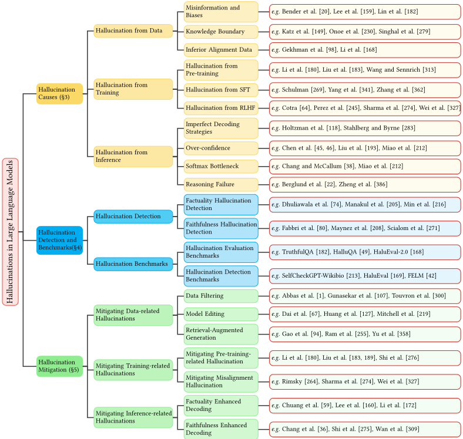
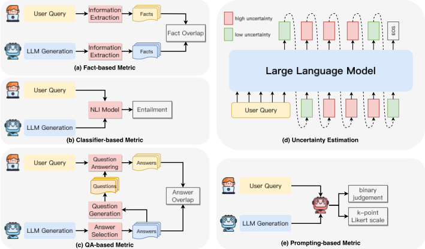
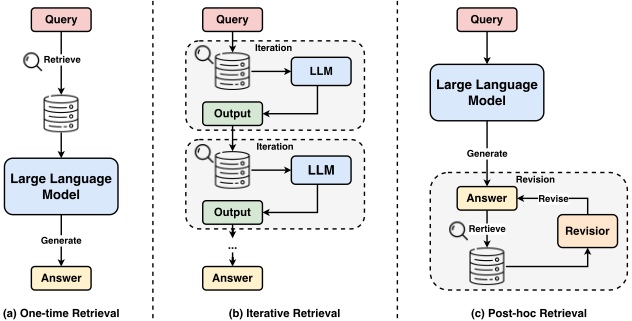

大语言模型幻觉综述：原理、分类、挑战与开放问题
该综述系统回答了"LLM 为什么会产生幻觉、如何检测与缓解"这一问题。方法上提出面向 LLM 的新分类法：factuality hallucination（与可验证世界事实矛盾或不可验证）与 faithfulness hallucination（instruction/context/logical inconsistency），并从数据、训练、推理三个阶段剖析成因，再将缓解策略与成因一一对应。关键结论包括：RAG 虽是缓解知识缺口幻觉的主流手段，但其自身仍会因检索失败（检索时机误判、歧义/复杂 query、检索源被 LLM 生成内容污染、chunking 与 embedding 缺陷）和生成瓶颈（噪声上下文、参数知识与上下文知识冲突、lost-in-the-middle、来源归因缺失）继续产生幻觉；检测侧已形成 fact-checking、不确定性估计、QA-based 与 LLM-as-judge 等多条路线及配套基准（TruthfulQA、HaluEval、SelfCheckGPT-Wikibio 等）。对团队而言，这是一份覆盖 RAG 链路诊断与产出可靠性评测方法的全景式参考。
LLM 在 chatbot、搜索引擎、知识问答等真实系统中会生成看似合理但与事实不符、或与用户指令/上下文不一致的内容（幻觉），且因输出高度拟人化而难以检测，直接影响系统可靠性与用户决策；同时，传统面向特定任务 NLG 的 intrinsic/extrinsic 幻觉分类法已不适用于开放式的 LLM 场景，需要重新定义分类体系，并系统化梳理成因、检测方法、评测基准与缓解策略。
综述性工作，无单一新架构，核心贡献包括：(1) 提出两层幻觉分类法：factuality hallucination（factual contradiction / factual fabrication）与 faithfulness hallucination（instruction inconsistency / context inconsistency / logical inconsistency）；(2) 从数据（错误信息与偏见、长尾/过时/版权知识边界、劣质对齐数据）、训练（单向表示、soft attention 缺陷、exposure bias）、推理（过自信、注意力局部化、Reversal Curse 等推理失败）三阶段归因；(3) 系统梳理检测方法：fact-checking（外部检索/内部检查）、uncertainty estimation（内部状态/自一致性/多辩论）、以及 fact-based、classifier-based、QA-based、uncertainty-based、LLM-based 忠实性指标；(4) 归纳评测基准体系（评估型与检测型）；(5) 将缓解策略与成因对应：数据过滤与去重、model editing（ROME/MEMIT/MALMEN）、RAG（one-time/iterative/post-hoc retrieval）、事实性与忠实性增强解码（factual-nucleus sampling、ITI、DoLa、CAD、CoVE 等）；(6) 专章剖析 RAG 系统自身的幻觉来源与改进方向（adaptive retrieval、query rewriting/decomposition、RAPTOR/semantic chunking/proposition 粒度、Chain-of-Note、Ms-PoE、source attribution 等）。
未在论文中说明
相对已有幻觉综述（Ji et al. 限于预训练 NLG 模型、Tonmoy et al. 侧重缓解策略、Wang et al. 侧重 factuality、Zhang et al. 分类相近），本文的区分点在于：(1) 提出针对 LLM 开放式使用场景的新分类法（factuality vs faithfulness），取代传统 intrinsic/extrinsic 二分；(2) 将缓解策略与幻觉成因直接绑定，形成针对性、连贯的框架；(3) 对 RAG 系统自身局限（检索失败与生成瓶颈）做了更深入的专章分析，而非仅将 RAG 视为解决方案。
相关度级别：high
命中能力域：3.1 上下文工程与记忆 | 3.2 提示工程 | 3.5 评测与可靠使用
理由：论文直接命中团队两个核心能力域：其一，第 6 章对 RAG 幻觉的剖析（检索时机判断、query 改写与分解、chunking 粒度与 embedding 选型、噪声上下文过滤、参数与上下文知识冲突、lost-in-the-middle、source attribution）正是团队"上下文工程与记忆"域在生产系统中的工程实践地图；其二，第 4 章的检测方法与基准体系（fact-checking、uncertainty estimation、LLM-as-judge、TruthfulQA/HaluEval/SelfCheckGPT-Wikibio/FELM 等）直接支撑"评测与可靠使用"域的产出质量保障。此外，文中 CoT、self-ask、opinion-based prompts、counterfactual demonstrations 等提示策略对应"提示工程"域，adaptive retrieval 的 self-aware judgment 对 Agent 决定何时调用检索工具亦有借鉴。全文站在"如何用好模型"而非训练模型的视角，与团队定位完全一致。
建议动作：深入精读并做内部分享
arXiv:2311.05232v2 [cs.CL] 2024年11月19日
1
LEI HUANG，哈尔滨工业大学，中国
WEIJIANG YU，华为技术有限公司，中国 哈尔滨工业大学，中国 哈尔滨工业大学，中国 华为技术有限公司，中国 哈尔滨工业大学，中国
WEITAO MA 和 WEIHONG ZHONG，ZHANGYIN FENG 和 HAOTIAN WANG，QIANGLONG CHEN 和 WEIHUA PENG，XIAOCHENG FENG ∗、BING QIN 和 TING LIU，
大型语言模型（Large Language Models, LLMs）的出现标志着自然语言处理（Natural Language Processing, NLP）领域的重大突破，推动了信息获取方式的范式转变。然而，LLMs 容易产生幻觉（hallucination），生成看似合理却不符合事实的内容。这一现象引发了人们对 LLMs 在现实世界信息检索（Information Retrieval, IR）系统中可靠性的严重担忧，并吸引了大量研究致力于检测和缓解此类幻觉。鉴于 LLMs 固有的开放式通用属性，LLM 幻觉呈现出与以往任务特定模型截然不同的独特挑战。这种差异凸显了对 LLM 幻觉最新进展进行细致理解和全面综述的紧迫性。在本综述中，我们首先提出了一种针对 LLM 时代幻觉的创新性分类体系，然后深入探讨导致幻觉的各种因素。随后，我们全面概述了幻觉检测方法与基准测试（benchmark）。接着，我们的讨论转向缓解 LLM 幻觉的代表性方法。此外，我们深入分析了检索增强生成（Retrieval-Augmented Generation, RAG）LLMs 在对抗幻觉方面面临的当前局限，为开发更鲁棒的 IR 系统提供了见解。最后，我们重点介绍了 LLM 幻觉领域有前景的研究方向，包括大型视觉-语言模型中的幻觉以及对 LLM 幻觉中知识边界的理解。
CCS 概念：· 计算方法学 → 自然语言生成；· 通用与参考 → 综述与概述。
附加关键词与短语：大型语言模型，幻觉，事实性，忠实性
Lei Huang、Weijiang Yu、Weitao Ma、Weihong Zhong、Zhangyin Feng、Haotian Wang、Qianglong Chen、Weihua Peng、Xiaocheng Feng、Bing Qin 与 Ting Liu。2024。大型语言模型中的幻觉综述：原理、分类体系、挑战与开放问题（A Survey on Hallucination in Large Language Models: Principles, Taxonomy, Challenges, and Open Questions）。ACM Transactions on Information Systems，第1卷，第1期，文章1（2024年1月），58页。https://doi.org/10.1145/3703155
∗ 通讯作者
作者地址：Lei Huang，哈尔滨工业大学，中国黑龙江省哈尔滨市东川路800号，150001，lhuang@ir.hit.edu.cn；Weijiang Yu，华为技术有限公司，中国广东省深圳市坂田街道，518129，weijiangyu8@gmail.com；Weitao Ma，wtma@ir.hit.edu.cn；Weihong Zhong，whzhong@ir.hit.edu.cn，哈尔滨工业大学，中国黑龙江省哈尔滨市东川路800号，150001；Zhangyin Feng，zyfeng@ir.hit.edu.cn；Haotian Wang，wanght1998@gmail.com，哈尔滨工业大学，中国黑龙江省哈尔滨市东川路800号，150001；Qianglong Chen，chenqianglong.ai@gmail.com；Weihua Peng，pengwh.hit@gmail.com，华为技术有限公司，中国广东省深圳市坂田街道，518129；Xiaocheng Feng，xcfeng@ir.hit.edu.cn；Bing Qin，qinb@ir.hit.edu.cn；Ting Liu，tliu@ir.hit.edu.cn，哈尔滨工业大学，中国黑龙江省哈尔滨市东川路800号，150001。
允许免费制作本作品全部或部分的数字或纸质副本供个人或课堂使用，前提是此类副本不得以营利或商业利益为目的制作或分发，且副本须在首页带有本声明及完整的引用信息。本作品中归作者以外的他人所有的组成部分之版权必须予以尊重。允许注明出处的摘录。除此之外的复制、再版、上传至服务器或向列表分发，均须事先获得特定许可和/或支付费用。如需申请许可，请联系 permissions@acm.org。
© 2024 版权归所有者/作者（们）所有。出版权已授权给 ACM。
1046-8188/2024/1-ART1 $15.00
ACM Transactions on Information Systems，第1卷，第1期，文章1。出版日期：2024年1月。
1:2
近年来，以 LLaMA [299, 300]、Claude [9]、Gemini [7, 259] 和 GPT-4 [232] 为代表的大语言模型（Large Language Models, LLMs）[383] 的出现，为自然语言处理（Natural Language Processing, NLP）带来了重大的范式转变，在语言理解 [116, 124]、生成 [373, 393] 和推理 [57, 151, 250, 326, 354] 方面取得了前所未有的进展。此外，LLMs 中编码的丰富事实知识使得利用 LLMs 进行信息获取 [6, 246] 取得了显著进展，并有可能重塑信息检索系统的格局 [394]。然而，与这些显著进展相伴而来的是人们对 LLMs 产生幻觉 [15, 105] 倾向的担忧，即生成看似合理却缺乏事实依据的内容。使这一问题更加复杂的是，LLMs 能够生成极具说服力且酷似人类的回复 [265]，这使得检测这些幻觉尤为困难，进而使 LLMs 的实际部署复杂化，尤其是那些已融入我们日常生活的现实世界信息检索（Information Retrieval, IR）系统，如聊天机器人 [8, 231]、搜索引擎 [4, 214] 和推荐系统 [97, 171]。鉴于这些系统提供的信息会直接影响决策，任何误导性信息都有可能传播错误观念，甚至造成危害。
值得注意的是，传统自然语言生成（Natural Language Generation, NLG）任务中的幻觉已得到广泛研究 [125, 136]，其中幻觉被定义为生成的内容要么毫无意义，要么与所提供的源内容不一致。这些幻觉被分为两类：内在幻觉（intrinsic hallucination），即生成的输出与源内容相矛盾；以及外在幻觉（extrinsic hallucination），即生成的输出无法从源内容中得到验证。然而，鉴于 LLMs 在各类任务中表现出卓越的通用性 [15, 30]，与针对特定任务定制的模型相比，理解 LLMs 中的幻觉带来了独特的挑战。此外，由于 LLMs 通常作为开放式系统运行，幻觉的范围涵盖了一个更广泛的概念，主要表现为事实性错误。这一转变要求对现有的幻觉分类体系进行重新评估和调整，以增强其在不断演变的 LLMs 格局中的适应性。
在本综述中，我们提出了一种专门针对涉及大语言模型（LLM）的应用而重新定义的幻觉分类体系。我们将幻觉划分为两大主要类型：事实性幻觉（factuality hallucination）与忠实性幻觉（faithfulness hallucination）。事实性幻觉强调生成内容与可验证的现实世界事实之间的差异，通常表现为事实不一致。相反，忠实性幻觉刻画的是生成内容偏离用户输入，或生成内容内部缺乏自一致性的情况。该类别进一步细分为指令不一致（即内容偏离用户的原始指令）、上下文不一致（强调与所提供上下文之间的差异）以及逻辑不一致（指出内容内部的矛盾）。这种分类细化了我们对 LLM 幻觉的理解，使其与当代的实际使用紧密契合。
深入探究 LLM 幻觉的潜在成因至关重要，这不仅有助于加深对这些现象的理解，还能为旨在缓解幻觉的策略提供依据。认识到 LLM 幻觉来源的多面性，本综述将潜在的致因归纳为三个主要方面：数据、训练和推理阶段。这种分类使我们能够涵盖广泛的因素范围，从而对幻觉在 LLM 系统中可能产生的起源与机制提供一个整体性的视角。此外，我们全面梳理了专门为检测 LLM 幻觉而设计的多种有效检测方法，并对与 LLM 幻觉相关的基准测试（benchmark）进行了详尽的概述，这些基准测试可作为合适的测试平台，用于评估 LLM 产生幻觉的程度以及检测方法的有效性。除评估之外，学界已为缓解 LLM 幻觉付出了大量努力。我们的研究按照相应的成因对这些举措进行了全面综述，涵盖与数据相关、与训练相关以及与推理相关的方法。此外，检索增强生成（RAG）在缓解幻觉方面的有效性已引起该领域的极大关注。尽管 RAG 具有相当大的潜力，但当前系统本身仍面临局限性，甚至也会出现幻觉。因此，本综述对这些挑战进行了深入分析，旨在为开发更健壮的 RAG 系统提供有价值的见解。我们还指出了若干有前景的未来研究方向，例如大型视觉-语言模型中的幻觉以及对 LLM 幻觉中知识边界的理解，为该领域后续的研究铺平道路。
ACM Transactions on Information Systems，第1卷，第1期，文章1。出版日期：2024年1月。
大语言模型中的幻觉综述：原理、分类、挑战与开放问题
1:3
与现有综述的比较。由于幻觉已成为生成式人工智能中的一项重大挑战，大量研究 [136, 192, 258, 298, 312, 376] 都聚焦于幻觉问题。尽管这些工作从不同角度探讨了大语言模型（LLM）幻觉并提供了有价值的见解，但本综述旨在厘清它们各自的贡献及其所涵盖的全面范围。Ji 等人 [136] 主要揭示了面向自然语言生成（NLG）任务的预训练模型中的幻觉，而未将 LLM 纳入其讨论范围。Tonmoy 等人 [298] 主要聚焦于讨论对抗 LLM 幻觉的缓解策略。此外，Liu 等人 [192] 从更宏观的视角审视了 LLM 的可信性，但未深入探讨具体的幻觉现象；而 Wang 等人 [312] 则对 LLM 的事实性进行了深入考察。然而，我们的工作聚焦于可信性挑战中的一个关键子集，专门讨论事实性，并将讨论扩展到包含忠实性幻觉。据我们所知，Zhang 等人 [376] 提出的研究与我们的最为接近，详细阐述了 LLM 幻觉的分类体系、评估基准测试和缓解策略。然而，本综述以独特的分类体系和组织结构而与众不同。我们对幻觉进行了细致的分层分类，并对幻觉的成因进行了更全面的分析。至关重要的是，我们提出的缓解策略与这些成因直接关联，为应对 LLM 幻觉提供了一个有针对性且连贯一致的框架。
本综述的组织结构。在本综述中，我们对 LLM 幻觉的最新进展进行了全面概述，如图 1 所示。我们首先构建了 LLM 领域中幻觉的分类体系（§2）。随后，我们深入分析了导致 LLM 幻觉的各种因素（§3），接着回顾了用于可靠检测 LLM 幻觉的各类策略和基准测试（§4）。然后，我们详细介绍了旨在缓解这些幻觉的一系列方法（§5）。最后，我们深入探讨了当前检索增强生成（RAG）系统所面临的挑战（§6），并勾勒了未来研究的潜在方向（§7）。
为了全面理解 LLM 中的幻觉，我们首先对 LLM 进行简要介绍（§2.1），以界定本综述的范围。随后，我们深入探讨 LLM 的训练阶段（§2.2），因为透彻理解训练机制对于阐明幻觉的起源具有重要意义。最后，我们详细阐述 LLM 中幻觉的概念（§2.3），并进一步将其划分为两种不同的类型。
在深入探讨幻觉的成因之前，我们首先介绍 LLM 的概念。通常，LLM 指的是一系列通用模型，它们采用基于 transformer 的语言模型架构，并在海量文本语料上进行大规模训练，代表性实例包括 GPT-3 [29]、PaLM [54]、LLaMA [300]、GPT-4 [232] 和 Gemini [259]。通过扩展数据规模与模型容量，LLM 展现出惊人的涌现能力，典型地包括上下文学习（in-context learning, ICL）[29]、思维链（chain-of-thought, CoT）提示 [326] 以及指令遵循 [244]。
ACM Transactions on Information Systems, 第 1 卷, 第 1 期, 文章 1. 出版日期： 2024 年 1 月.
1:4

大语言模型（LLM）的属性与行为同其训练过程紧密交织。LLM 经历三个主要训练阶段：预训练、监督微调（supervised fine-tuning, SFT）以及基于人类反馈的强化学习（reinforcement learning from human feedback, RLHF）。分析这些阶段有助于洞察 LLM 中幻觉的起源，因为每个阶段都为模型赋予了特定的能力。
2.2.1 预训练。预训练被广泛认为是 LLM 获取知识与能力的基础性阶段 [388]。在此阶段，LLM 对序列中的后续 token 进行自回归预测。通过在海量文本语料上进行自监督训练，LLM 习得了语言语法知识、世界知识以及推理能力，从而为进一步的微调奠定坚实基础。此外，近期研究 [72, 291] 表明，预测后续词语近似于对重要信息进行无损压缩。LLM 的本质在于预测即将出现的词语的概率分布。准确的预测意味着对知识的深刻掌握，并进而转化为对世界的细致理解。
ACM Transactions on Information Systems, 第 1 卷, 第 1 期, 文章 1. 出版日期： 2024 年 1 月.
大语言模型中的幻觉综述：原理、分类、挑战与开放问题
1:5
幻觉这一概念起源于病理学和心理学领域，被定义为对现实中并不存在的事物或事件的感知 [202]。在自然语言处理（NLP）领域，幻觉通常指这样一种现象：生成的内容显得毫无意义，或与所提供的源内容不相符 [89, 208]。这一概念与人类心理学中观察到的幻觉现象仅有松散的相似之处。一般而言，自然语言生成任务中的幻觉可以划分为两大主要类型：内在幻觉（intrinsic hallucination）和外在幻觉（extrinsic hallucination）[126, 136, 174]。
具体而言，内在幻觉是指与所提供的源上下文直接冲突的模型输出。另一方面，外在幻觉则涉及无法借助所提供的源上下文或外部知识库加以验证的输出。这意味着生成的文本既得不到现有信息的支持，也不与之直接矛盾，从而使输出无法验证且可能具有误导性。
然而，在大语言模型（LLM）时代，这些模型的多方面能力促使其在众多领域得到广泛应用，这也凸显了现有面向特定任务的分类范式的局限性。考虑到 LLM 高度强调以用户为中心的交互，并优先与用户指令保持对齐，加之其幻觉主要在事实层面显现，我们在 Ji 等人 [136] 的基础性工作之上提出了一种更细粒度的分类体系。这一改进的分类体系旨在概括与 LLM 幻觉相关的独特复杂性。为了更直观地阐释我们对 LLM 幻觉的定义，我们在表 1 中给出了每种幻觉类型的示例，即事实性幻觉（factuality hallucination）和忠实性幻觉（faithfulness hallucination）。
ACM Transactions on Information Systems, 第 1 卷, 第 1 期, 文章 1. 出版日期： 2024 年 1 月.
1:6
| Category | Type | Example Dialog | Explanation |
|---|---|---|---|
| Factuality Hallucination | Factual Contradiction | . Instruction: What are Thomas Edison's main contributions to science and technology? Response: Thomas Edison developed the first practical tele- phone and invented the light bulb. Instruction: What are the major environmental impacts of | The response is factually incorrect. In reality, Edison improved the light bulb, building on earlier desi- gns by others , and Alexander Graham Bell inven - ted the telephone . |
| Factual Fabrication | the construction of the Eiffel Tower? Response: The construction of the Eiffel Tower in 1889 led to the extinction of the Parisian tiger, a species that played a crucial role in the region's ecosystem. Additionally, it is wid- ely recognized as the event that sparked the global green architecture movement. | The response erroneously states that the construction of the Eiffel Tower led to the extinction of the 'Parisian tiger' and sparked the global green architecture move- ment. In fact, there is no evidence of a 'Parisian tig- er' ever existing, making this a fabricated claim. Moreover, attributing the origins of green architec- ture to the Eiffel Tower is an exaggeration , as this movement has diverse roots and cannot be traced back to a single event. | |
| Faithfulness Hallucination | Instruction Inconsistency | Instruction: Translate the English question into Spanish: "What is the capital of France?" Response: The capital of France is Paris. | The user explicitly provided an instruction to translate the English question into Spanish. Instead of perform- ing the translation as instructed, the LLM chose to answer the question. |
| Context Inconsistency | Retrieved context: The Nile is a major north-flowing river in northeastern Africa. It's traditionally considered the longest river in the world. Originating in the Great Lakes region of central Africa, it flows through several countries before emptying into the Mediterranean Sea. Instruction: Summarize the retrieval document above. Response: The Nile originates from the mountain ranges of central Africa and flows into the Mediterranean. | The summary incorrectly states that the Nile originates from the "mountain ranges of central Africa", while the paragraph mentions that the Nile originates in the Great Lakes region of central Africa. | |
| Logical Inconsistency | Instruction: Solve the equation 2x + 3 = 11 step by step. Response: Step 1: Subtract 3 from both sides to get: 2x = 8. Step 2: Divide both sides by 2 to get: x = 3. So the result of the equation is x=3. | The first step correctly isolates the term with x to get 2x = 8. However, the next step inaccurately divides 8 by 2 to yield a result of x = 3 , which is inconsistent with the earlier reasoning. |
| Category | Type | Example Dialog | Explanation |
这一转变主要归因于它们所拥有的海量参数化事实知识。然而，现有的 LLM 偶尔会表现出产生与真实世界事实不一致或无法验证的输出的倾向 [168]，这对人工智能的可信度构成了挑战。在此背景下，我们将这些事实性幻觉划分为两大主要类型：
事实矛盾（Factual Contradiction）是指 LLM 的输出所包含的事实虽然能够锚定于真实世界信息、但呈现出矛盾的情形。这种类型的幻觉出现得最为频繁，且来源多样，涵盖 LLM 对事实知识的获取、存储和表达。根据矛盾的错误类型，它可以进一步划分为两个子类别：实体错误幻觉（entity-error hallucination）和关系错误幻觉（relation-error hallucination）。
事实性捏造（Factual Fabrication）是指 LLM 的输出包含无法依据既有现实世界知识加以验证的事实的情况。这可以进一步分为不可验证性幻觉（unverifiability hallucination）和过度断言幻觉（overclaim hallucination）。
ACM Transactions on Information Systems, 第 1 卷， 第 1 期， 文章 1. 出版日期： 2024 年 1 月.
大语言模型中的幻觉综述：原理、分类、挑战与开放问题
1:7
2.3.2 忠实性幻觉（Faithfulness Hallucination）。LLM 在本质上就是被训练来与用户指令对齐的。随着 LLM 的使用向更加以用户为中心的应用转变，确保其与用户提供的指令和上下文信息保持一致变得日益重要。此外，LLM 的忠实性还体现在其生成内容的逻辑一致性上。基于这一视角，我们将忠实性幻觉划分为三个子类：
指令不一致（Instruction inconsistency）是指 LLM 的输出偏离用户指令的情况。虽然某些偏离可能是为了遵循安全准则，但此处的不一致指的是对非恶意用户指令的无意偏离。如表 1 所述，用户的真实意图是翻译，然而 LLM 错误地偏离了用户指令，转而执行了问答任务。
上下文不一致（Context inconsistency）是指 LLM 的输出与用户提供的上下文信息不相符的情况。例如，如表 1 所示，用户提到尼罗河的源头位于中非的大湖地区，然而 LLM 的回答却与该上下文相矛盾。
逻辑不一致（Logical inconsistency）强调的是 LLM 输出表现出内部逻辑矛盾的情况，这种情形常见于推理任务中。它表现为推理步骤彼此之间的不一致，以及推理步骤与最终答案之间的不一致。例如，如表 1 所示，尽管将等式两边同时除以 2 这一推理步骤是正确的，但最终答案 x=4 与推理链不一致，从而得出了错误的结果。
LLM 幻觉的成因是多方面的，贯穿了 LLM 能力获取过程的整个谱系。在本节中，我们深入探究 LLM 幻觉的根本原因，将其主要归纳为三个关键方面：(1) 数据（§3.1）、(2) 训练（§3.2）以及 (3) 推理（§3.3）。
用于训练大语言模型（LLM）的数据由两个主要部分构成：(1) 预训练数据，LLM 借助其获得通用能力与事实知识 [388]；(2) 对齐数据，用于教会 LLM 遵循用户指令并与人类偏好保持一致 [322]。尽管这些数据不断拓展着 LLM 的能力边界，它们却在无意之中成为 LLM 幻觉的主要诱因。这主要体现在三个方面：存在缺陷的预训练数据源中包含错误信息与偏见（§3.1.1）、知识边界受预训练数据范围的固有限制（§3.1.2），以及低劣对齐数据所诱发的幻觉（§3.1.3）。
3.1.1 错误信息与偏见。神经网络具有记忆训练数据的内在倾向 [35]，且这种记忆倾向会随模型规模的增大而增强 [34, 54]。总体而言，这种固有的记忆能力在对抗幻觉的斗争中是一把双刃剑。一方面，LLM 的记忆能力表明其有潜力捕捉深刻的世界知识；另一方面，当预训练数据中存在错误信息与偏见时，这种能力便会带来问题，并可能在无意中被放大，表现为模仿性虚假（imitative falsehood）[182] 以及社会偏见的强化。为便于更全面地理解，表 2 给出了详细示例。
ACM Transactions on Information Systems, Vol. 1, No. 1, Article 1. 出版日期：2024 年 1 月。
1:8
| Type | Premise | Input | Model Ouput | Explanation |
|---|---|---|---|---|
| Imitative Falsehood | Within the LLM's training data, a fre- quently referenced but incorrect fact appears multiple times: Thomas Edison invented the light bulb. | Who is credited with the invention of the light bulb? | Thomas Edison is cred- ited with the invention of the light bulb. | While Edison im- proved the light bulb's design, he was not its sole inventor. The model's answer reflects a misconception prevalent in its training data, exemplifying an imitative falsehood. |
| Societal Biases | In the model's train- ing data, certain names may frequently be associated with specific nationalities. | Provide a summary of the following news: Dr. Kimre- cently published a break- through paper on quantum computing. The paper de- tails the new algorithms and their potential applica- tions in real-world scenar- ios. It has been hailed as revolutionary by experts. | Dr. Kim from South Ko- rea recently published a paper on quantum computing, detailing new algorithms and their applications. | The model erro- neously added "South Korea" based on the name "Kim" revealing its bias in linking cer- tain names to specific nationalities, which can cause hallucinations in the summary. |
| Type | Premise | Input | Model Ouput | Explanation |
模仿性虚假。虚假新闻、无根据的谣言等错误信息在各大社交媒体平台上广泛传播，并逐渐成为 LLM 幻觉的重要诱因之一。预训练对大规模语料库日益增长的需求，使得采用启发式数据收集方法成为必然。这类方法虽然便于获取海量数据，但在保持数据质量一致性方面面临挑战，从而不可避免地将此类错误信息引入预训练数据 [20, 328]。在这种情况下，LLM 凭借其出色的记忆能力，生成此类虚假陈述的可能性将会增大，进而导致模仿性虚假。而 LLM 大幅降低了内容创作门槛这一事实，又使该问题进一步加剧，对公共话语和互联网生态系统的可信度构成了相当大的风险。
社会偏见。除了错误信息之外，偏见也深深植根于社交媒体平台之中，并以多种形式显现，例如带有偏见的招聘、立场偏颇的新闻以及散布仇恨言论。作为一种纯粹的负面现象，偏见与幻觉之间存在明显差异，主要体现在刻板印象的传播和社会不平等方面。然而，某些偏见与幻觉有着内在关联，尤其是与性别 [242] 和国籍 [155, 226] 相关的偏见。例如，大语言模型（LLM）可能会将护理职业与女性联系起来，即使用户提供的上下文中并未明确提及性别，这正是第（§2.3）节所讨论的上下文不一致的一个例证。这类偏见可能在无意中从基于互联网的文本中习得——这些文本充斥着多样且带有偏见的观点——并随后被传播到生成的内容之中 [155]。
ACM Transactions on Information Systems, Vol. 1, No. 1, Article 1. Publication date: January 2024.
A Survey on Hallucination in Large Language Models: Principles, Taxonomy, Challenges, and Open Questions
1:9
| Type | Input | Model Ouput | Explanation |
|---|---|---|---|
| Long-tail Knowledge | What causes phenylke- tonuria? | Phenylketonuria is caused by a mutation in the hemoglobin gene, which results in an unusual interaction with hemoglobin, affecting its ability to transport oxygen in the bloodstream. | The correct cause of phenylke- tonuria is mutations in the PAH gene. Such specialized medical information is less frequently encountered in the training corpus, making LLMs struggle to memorize. |
| Up-to-date Knowledge | Who will be the Demo- cratic Party candidate for the 2024 US presi- dential election? | Michelle Obama has an- nounced her candidacy and is leading in the polls, with significant endorsements from key Democratic figures such as Barack Obama and Bernie Sanders. She has also outlined a policy platform focusing on healthcare reform and climate change initiatives. | After President Joe Biden an- nounced his withdrawal from the race on July 21, 2024, he endorsed Kamala Harris as the Democratic Party candidate. Such hallucina- tions arise because LLMs' para- metric knowledge cannot be updated in real-time, leading to potential fabrication regard- ing current events. |
| Copyright-sensitive Knowledge | Describe the ending of the novel "The Secrets of the Alchemist" that was published last year. | In the dramatic conclusion of "The Secrets of the Alchemist", the protagonist discovers the true secret behind the philoso- pher's stone, leading to a peace- ful resolution with all charac- ters sharing in the wisdom. | The novel "The Secrets of the Alchemist" is under copyright protection, and LLMs have not been trained directly on such copyrighted materials. Thus, the model's output fabricates de- tails about the book's ending. |
| Type | Input | Model Ouput | Explanation |
长尾知识。预训练语料库中的知识分布本质上并不均匀，这导致 LLM 在不同类型的知识上表现出参差不齐的熟练程度。近期研究已经强调，模型在通用领域问题上的准确率与预训练语料库中相关文档的数量 [145] 或实体的流行度 [204] 之间存在很强的相关性。此外，鉴于 LLM 主要在海量的通用领域语料库上进行训练 [93, 243, 254]，它们可能在特定领域知识方面存在欠缺。当 LLM 面临需要特定领域专业知识的任务时，这一局限尤为明显，例如医学 [179, 279] 和法律 [149, 353] 问题，此时这些模型可能表现出显著的幻觉，通常表现为事实性捏造。
时效性知识。除了长尾知识的不足之外，LLM 知识边界方面的另一个内在局限是其掌握最新知识的能力受限。LLM 中蕴含的事实知识具有明确的时间边界，并可能随时间推移而过时 [148, 166, 230]。这些模型一旦完成训练，其内部知识便不再更新。鉴于我们所处世界的动态性和不断演变的特性，这构成了一个挑战。当面对超出其时间范围的查询时，LLM 往往会诉诸捏造事实，或给出在过去或许正确、但如今已经过时的答案。
ACM Transactions on Information Systems, Vol. 1, No. 1, Article 1. Publication date: January 2024.
1:10
版权敏感知识。由于许可限制 [262]，现有 LLM 在法律上只能基于公开授权的语料库 [63, 93] 或其他可在不侵犯版权法的前提下使用的语料库 [10, 115] 进行训练。这一限制显著影响了 LLM 能够合法获取的知识的广度与多样性。大量有价值的知识被封存于受版权保护的资料之中，例如最新的科学研究、专有数据以及受版权保护的文学作品，这些知识对 LLM 而言仍无法获取。这种排斥造成了知识鸿沟，当 LLM 试图在其训练数据无法获取的领域生成信息时，便可能引发潜在的幻觉 [215]。
3.1.3 劣质对齐数据。经过预训练阶段后，LLM 已在其参数中嵌入了大量事实知识，从而形成了明确的知识边界。在监督微调（supervised fine-tuning, SFT）阶段，LLM 通常在由人工标注者标注的指令对上进行训练，这可能引入超出预训练阶段所建立知识边界的新事实知识。Gekhman 等人 [98] 分析了在 SFT 过程中纳入新事实知识的训练动态，发现 LLM 难以有效获取此类新知识。最重要的是，他们发现通过 SFT 获取新知识与幻觉增多之间存在相关性，这表明引入新的事实知识会促使 LLM 产生幻觉。此外，Li 等人 [168] 对指令在产生幻觉方面的影响进行了广泛分析。研究结果表明，主要侧重于任务格式学习的任务特定指令往往会产生更高比例的幻觉性回复。同时，过于复杂和多样的指令也会导致幻觉增多。
如第 2.2 节所述，训练的各个不同阶段赋予大语言模型（LLM）多种能力：预训练侧重于获取通用表示与世界知识，而对齐则使 LLM 能够更好地与用户指令和偏好保持一致。尽管这些阶段对于赋予 LLM 卓越能力至关重要，但任一阶段的不足都可能无意中为幻觉的产生铺平道路。
3.2.1 来自预训练的幻觉。预训练构成了 LLM 的基础阶段，主要采用基于 Transformer 的架构，遵循由 GPT [29, 251, 252] 确立、并由 OPT [372]、Falcon [243] 和 Llama-2 [300] 进一步发展的范式。该阶段采用因果语言建模（causal language modeling）目标，模型学习以单向、从左到右的方式仅根据前序 token 来预测后续 token。这种方式虽然有利于高效训练，但本质上限制了捕捉复杂上下文依赖关系的能力，可能增加幻觉出现的风险 [180]。此外，近期研究揭示，LLM 偶尔会表现出跨越长程与短程依赖的不可预测的推理幻觉，这可能源于软注意力（soft attention）的局限性 [52, 111]，即随着序列长度的增加，注意力会在各个位置上被稀释。值得注意的是，曝光偏差（exposure bias）现象 [21, 256] 长期以来一直是促成幻觉的一个严重因素，它源于自回归生成模型中训练与推理之间的差异。这种不一致可能导致幻觉 [313]，尤其是当模型生成的某个错误 token 使错误在后续序列中级联传播时，类似于滚雪球效应 [368]。
ACM Transactions on Information Systems，第 1 卷，第 1 期，文章 1。出版日期：2024 年 1 月。
大语言模型中的幻觉综述：原理、分类、挑战与开放问题
1:11
解码在展现大语言模型（LLM）经过预训练与对齐后的能力方面发挥着重要作用。然而，解码策略中的某些缺陷可能导致 LLM 幻觉。
ACM Transactions on Information Systems，第 1 卷，第 1 期，文章 1。出版日期：2024 年 1 月。
1:12
主要采用因果语言模型架构的 LLM 已得到广泛应用，但过度自信现象依然持续存在。在生成过程中，下一个词的预测同时以语言模型上下文和已生成的部分文本为条件。然而，正如先前研究 [19, 189, 307] 所表明的，语言模型的注意力机制往往表现出局部化聚焦，优先关注邻近的词，从而导致上下文注意力明显不足 [275]。此外，在倾向于生成冗长而全面回答的 LLM 中，这一问题会进一步放大。在这种情况下，甚至更容易面临指令遗忘的风险 [46, 193]。这种注意力不足会直接导致忠实性幻觉，即模型输出的内容偏离原始上下文。
3.3.4 推理失败。除了长尾知识带来的挑战之外，知识的有效利用与推理能力密不可分。例如，在多跳问答场景中，即使 LLM 具备必要的知识，当问题之间存在多重关联时，它也可能因推理能力的局限而难以给出准确的结果 [386]。此外，Berglund 等人 [22] 揭示了 LLM 中一种被称为“逆转诅咒”（Reversal Curse）的特定推理失败。具体而言，当问题被表述为“A is B”时，模型能够正确回答；但当被问及相反的“B is A”时，其逻辑演绎却会失败。这种推理上的偏差并不仅限于简单的演绎。
大语言模型（LLM）中的幻觉问题已引起广泛关注，引发了人们对 LLM 可靠性及其在实际应用中部署的担忧。随着 LLM 生成类人文本的能力日益增强，准确区分幻觉内容与事实内容变得愈发重要。此外，有效衡量 LLM 的幻觉程度对于提升其可靠性至关重要。因此，在本节中，我们将深入探讨幻觉检测方法（§4.1）以及用于评估 LLM 幻觉的基准测试（benchmark）（§4.2）。
现有的 LLM 幻觉检测策略可以依据幻觉类型进行分类：（1）事实性幻觉检测（factuality hallucination detection），旨在识别模型输出中的事实性错误；（2）忠实性幻觉检测（faithfulness hallucination detection），侧重于评估模型输出对所提供上下文信息的忠实程度。
4.1.1 事实性幻觉检测。事实性幻觉检测涉及评估 LLM 的输出是否与现实世界的事实相符。典型方法通常分为两类：事实核查（fact-checking），即对照可信知识来源验证所生成回复的事实性；以及不确定性估计（uncertainty estimation），侧重于通过内部不确定性信号检测事实不一致性。
ACM Transactions on Information Systems，第 1 卷，第 1 期，文章 1。出版日期：2024 年 1 月。
大语言模型中的幻觉综述：原理、分类、挑战与开放问题
1:13
事实核查。鉴于 LLM 的输出通常内容全面且由多个事实性陈述构成，事实核查方法一般分为两个主要步骤：（1）事实抽取（fact extraction），即从模型输出中抽取独立的事实性陈述；（2）事实验证（fact verification），旨在对照可信知识来源验证这些事实性陈述的正确性。根据验证时所采用知识来源的类型，事实核查方法可大致分为两个不同的类别：外部检索（external retrieval）和内部检查（internal checking）。
不确定性估计。虽然许多幻觉检测方法依赖外部知识来源进行事实核查，但也有若干方法被设计用于在零资源（zero-resource）场景下解决这一问题，从而免除了对检索的需求。这些策略背后的基本前提是：LLM 幻觉的产生根源与模型的不确定性存在内在关联。因此，通过估计模型所生成事实内容的不确定性，便能够实现幻觉检测。不确定性估计的方法大致可分为两类：基于 LLM 内部状态的方法和基于 LLM 行为的方法，如图 2 所示。
ACM Transactions on Information Systems，第 1 卷，第 1 期，文章 1。出版日期：2024 年 1 月。
1:14
解释能够表明模型对该概念的掌握程度。通过首先提示模型为给定概念生成解释，然后采用受限解码（constrained decoding）让模型基于其生成的解释重新生成原始概念，响应序列的概率得分便可以作为该概念的熟悉度得分。此外，Yao 等人 [345] 从对抗攻击的视角对幻觉进行了解读。他们利用基于梯度的 token 替换方法，设计了用于诱导幻觉的提示。值得注意的是，他们观察到，与对抗攻击所产生的 token 相比，由原始提示生成的首个 token 通常表现出较低的熵。基于这一观察，他们提出通过设置熵阈值来定义此类幻觉攻击。
4.1.2 忠实性幻觉检测。确保 LLM 忠实于所提供的上下文或用户指令，对于其在信息检索（IR）应用（从对话式搜索到交互式对话系统）中的实用价值至关重要。我们将现有的针对忠实性的幻觉检测指标分为以下几类，其概览如图 3 所示：(1) 基于事实 (2) 基于分类器 (3) 基于问答（QA） (4) 基于不确定性 (5) 基于 LLM。
基于事实的指标。在评估忠实性的领域中，最直观的方法之一是度量生成内容与源内容之间关键事实的重叠程度。鉴于事实具有多样化的表现形式，忠实性可以基于 n-gram、实体和关系三元组来度量。传统的基于 n-gram 的指标，如 BLEU [239]、ROUGE [181] 和 PARENT-T [324]，通常难以区分生成内容与源内容之间的细微差异 [208]。基于实体的指标 [225] 更进一步，通过计算实体之间的重叠度来进行度量，因为任何对这些关键实体的遗漏或不准确生成都可能导致不忠实的响应。值得注意的是，即使实体相互匹配，它们之间的关系也可能是错误的。因此，基于关系的指标 [99] 关注关系元组的重叠度，并提出了一种指标，用于计算由经过训练的端到端事实抽取模型所抽取的关系元组之间的重叠度。
ACM Transactions on Information Systems, 第 1 卷, 第 1 期, 文章 1. 出版日期： 2024 年 1 月.
大语言模型中的幻觉综述：原理、分类、挑战与开放问题
1:15

基于分类器的度量。除了计算事实重叠之外，另一种评估模型生成内容忠实度的直接方法是利用在相关任务数据上训练的分类器，这些相关任务包括自然语言推理（NLI）和事实核查（fact-checking），或者利用由针对特定任务合成的幻觉内容与忠实内容组成的数据。评估生成文本忠实度的一个基本原则植根于这样一种理念：真正忠实的内容应当能够被其源内容所蕴含。遵循这一思路，大量研究 [82, 208] 在 NLI 数据集上训练分类器以识别事实性错误，尤其是在抽象式摘要的场景中。然而，Mishra 等人 [217] 指出，传统 NLI 数据集与不一致性检测数据集之间在输入粒度上的不匹配，限制了它们在有效检测不一致性方面的适用性。在此基础上，更深入的研究提出了诸如在对抗性数据集上进行微调 [17]、在依存弧（dependency arc）层面分解蕴含决策 [101]，以及将文档切分为句子单元再聚合句子对之间得分 [154] 等方法。尽管使用相关任务的数据来微调分类器在评估忠实度方面已展现出前景，但必须认识到相关任务与下游任务之间存在的固有差距。标注数据的稀缺进一步限制了这些方法的适用性。为应对这一挑战，大量研究涌现，探索利用数据增强方法来构建合成数据以微调分类器，其方式要么是基于规则的扰动 [79, 152, 266]，要么是基于生成的方法 [389]。
ACM Transactions on Information Systems, 第 1 卷，第 1 期，文章 1。出版日期：2024 年 1 月。
1:16
基于问答（QA）的度量。与基于分类器的度量不同，基于 QA 的度量 [77, 119, 271, 310] 近来因其能够更好地捕捉模型生成内容与源内容之间信息重叠的能力而受到关注。这类度量的运作方式是：首先从 LLM 输出的信息单元中选取目标答案，然后由问题生成模块生成问题。随后，这些问题被用于基于用户上下文生成源答案。最后，通过比较源答案与目标答案之间的匹配得分来计算 LLM 回答的忠实度。尽管这些方法在主题思路上具有共性，但它们在答案选取、问题生成和答案重叠等方面存在差异，从而导致性能表现各异。在这一基础性工作之上，Fabbri 等人 [80] 对基于 QA 的度量中的各个组件进行了深入评估，进一步改进了忠实度评估。
基于不确定性的度量。与 §4.1.1 中用于检测事实性幻觉（factuality hallucination）的基于不确定性的方法相类似，不确定性估计在评估忠实性（faithfulness）方面的应用已得到广泛探索，通常以熵和对数概率为特征。对于基于熵的不确定性，Xiao 和 Wang [333] 揭示了数据到文本生成（data-to-text generation）中幻觉可能性与预测不确定性之间的正相关关系，其中预测不确定性通过深度集成（deep ensembles）[156] 进行估计。与此相关，Guerreiro 等人 [106] 在神经机器翻译中利用 Monte Carlo Dropout [92] 所生成假设的方差作为不确定性度量。最近，van der Poel 等人 [305] 采用条件熵 [337] 来评估抽象式摘要（abstractive summarization）中的模型不确定性。至于对数概率，它可以应用于不同的粒度层级，例如词级或句子级。值得注意的是，多项研究 [91, 106, 359] 采用了长度归一化的序列对数概率来衡量模型置信度。此外，考虑到当前文上下文包含相同的幻觉信息时，幻觉 token 可能被赋予较高的概率，Zhang 等人 [374] 聚焦于最具信息量且最重要的关键词，并引入了一种惩罚机制来对抗幻觉内容的传播。
基于 LLM 的评判。最近，LLM 出色的指令遵循能力凸显了其在自动评估方面的潜力 [51, 190, 314]。利用这一能力，研究者们已尝试探索评估模型生成内容忠实性的新范式 [2, 95, 133, 153, 199]。通过为 LLM 提供具体的评估指南，并向其同时输入模型生成内容与源内容，它们便能够有效地评估忠实性。最终的评估输出既可以是对忠实性的二元判断 [199]，也可以是指示忠实程度的 k 点 Likert 量表 [95]。在提示选择方面，评估提示既可以采用直接提示（direct prompting）、思维链（CoT）提示 [2]、上下文学习（in-context learning）[133]，也可以让模型在生成评估结果的同时附带解释 [153]。
In this section, we present a comprehensive overview of existing hallucination benchmarks, which can be categorized into two primary domains: Hallucination Evaluation Benchmarks (§4.2.1), which assess the extent of hallucinations generated by existing cutting-edge LLMs, and Hallucination Detection Benchmarks (§4.2.2), designed specifically to evaluate the performance of existing hallucination detection methods. Collectively, these benchmarks establish a unified framework, enabling a nuanced and thorough exploration of hallucinatory patterns in LLMs.
ACM Transactions on Information Systems, Vol. 1, No. 1, Article 1. Publication date: January 2024.
A Survey on Hallucination in Large Language Models: Principles, Taxonomy, Challenges, and Open Questions
1:17
| Benchmark | Datasets | Data Size | Language | Attribute.Factuality | Attribute.Faithfulness | Attribute.Manual | Task.Task Type | Task.Input | Task.Label | Task.Metric |
|---|---|---|---|---|---|---|---|---|---|---|
| TruthfulQA [182] | - | 817 | English | ✔ | ✗ | ✔ | Generative QA Multi-Choice QA | Question | Answer | LLM-Judge & Human |
| REALTIMEQA [148] | - | Dynamic | English | ✔ | ✗ | ✔ | Multi-Choice QA Generative QA | Question | Answer | Acc EM & F1 |
| SelfCheckGPT-Wikibio [213] | - | 1,908 | English | ✗ | ✔ | ✗ | Detection | Paragraph & Concept | Passage | AUROC |
| HaluEval | Task-specific | 30,000 | English | ✗ | ✔ | ✗ | Detection | Query | Response | Acc |
| [169] | General | 5,000 | English | ✗ | ✔ | ✗ | Detection | Task Input | Response | Acc |
| Med-HALT [303] | - | 4,916 | Multilingual | ✔ | ✗ | ✗ | Multi-Choice QA | Question | Choice | Pointwise Score & Acc |
| FACTOR | Wiki-FACTOR | 2,994 | English | ✔ | ✗ | ✗ | Multi-Choice QA | Question | Answer | likelihood |
| [223] | News-FACTOR | 1,036 | English | ✔ | ✗ | ✗ | Multi-Choice QA | Question | Answer | likelihood |
| BAMBOO | SenHallu | 200 | English | ✗ | ✔ | ✗ | Detection | Paper | Summary | P & R & F1 |
| [76] | AbsHallu | 200 | English | ✗ | ✔ | ✗ | Detection | Paper | Summary | P & R & F1 |
| ChineseFactEval [311] | - | 125 | Chinese | ✔ | ✗ | ✔ | Generative QA | Question | - | Score |
| HaluQA [49] | Misleading | 175 | Chinese | ✔ | ✗ | ✔ | Generative QA | Question | Answer | LLM-Judge |
| HaluQA [49] | Misleading-hard | 69 | Chinese | ✔ | ✗ | ✔ | Generative QA | Question | Answer | LLM-Judge |
| HaluQA [49] | Knowledge | 206 | Chinese | ✔ | ✗ | ✔ | Generative QA | Question | Answer | LLM-Judge |
| FreshQA [308] | Never-changing | 150 | English | ✔ | ✗ | ✔ | Generative QA | Question | Answer | Human |
| FreshQA [308] | Slow-changing | 150 | English | ✔ | ✗ | ✔ | Generative QA | Question | Answer | Human |
| FreshQA [308] | Fast-changing | 150 | English | ✔ | ✗ | ✔ | Generative QA | Question | Answer | Human |
| FreshQA [308] | False-premise | 150 | English | ✔ | ✗ | ✔ | Generative QA | Question | Answer | Human |
| FELM [42] | - | 3,948 | English | ✔ | ✔ | ✗ | Detection | Question | Response | Balanced Acc & F1 |
| PHD [340] | PHD-LOW | 100 | English | ✗ | ✔ | ✗ | Detection | Entity | Response | P & R & F1 |
| PHD [340] | PHD-Meidum | 100 | English | ✗ | ✔ | ✗ | Detection | Entity | Response | P & R & F1 |
| PHD [340] | PHD-High | 100 | English | ✗ | ✔ | ✗ | Detection | Entity | Response | P & R & F1 |
| ScreenEval [158] | - | 52 | English | ✗ | ✔ | ✗ | Detection | Document | Summary | AUROC |
| RealHall [90] | COVID-QA | N/A | English | ✗ | ✔ | ✗ | Detection | Question | Answer | AUROC |
| DROP | N/A | English | ✗ | ✔ | ✗ | Detection | Question | Answer | AUROC | |
| Open Assistant | N/A | English | ✗ | ✔ | ✗ | Detection | Question | Answer | AUROC | |
| TriviaQA | N/A | English | ✗ | ✔ | ✗ | Detection | Question | Answer | AUROC | |
| LSum [85] | - | 6,166 | English | ✗ | ✔ | ✗ | Detection | Document | Summary | Balanced Acc |
| SAC 3 | HotpotQA | 250 | English | ✗ | ✔ | ✗ | Detection | Question | Answer | AUROC |
| [364] | NQ-Open | 250 | English | ✗ | ✔ | ✗ | Detection | Question | Answer | AUROC |
| Biomedicine | 1,535 | English | ✔ | ✗ | ✗ | Generative QA | Question | Answer | MiHR & MaHR | |
| HaluEval 2.0 | Finance | 1,125 | English | ✔ | ✗ | ✗ | Generative QA | Question | Answer | MiHR & MaHR |
| Science | 1,409 | English | ✔ | ✗ | ✗ | Generative QA | Question | MiHR & MaHR | ||
| ✗ | Answer | & MaHR | ||||||||
| [168] | Education Open domain | 1,701 3,000 | English English | ✔ ✔ | ✗ | ✗ ✗ | Generative QA Generative QA | Question Question | Answer Answer | MiHR MiHR & MaHR |
| Benchmark | Datasets | Data Size | Language | Attribute.Factuality | Attribute.Faithfulness | Attribute.Manual | Task.Task Type | Task.Input | Task.Label | Task.Metric |
4.2.1 Hallucination Evaluation Benchmarks. Hallucination evaluation benchmarks are devised to quantify the tendency of LLMs to generate hallucinations, particularly emphasizing factual inaccuracies and inconsistency from the given contexts. Given the adeptness of LLMs at memorizing high-frequency count knowledge, the primary focus of current hallucination evaluation benchmarks targets long-tailed knowledge and challenging questions that can easily elicit imitative falsehood. As for evaluating, these benchmarks typically utilize multiple choice QA, where performance is measured through accuracy metrics, or generative QA, evaluated either through human judgment or scores given by proxy models.
ACM Transactions on Information Systems, Vol. 1, No. 1, Article 1. Publication date: January 2024.
1:18
长尾事实知识。收集长尾事实问答样本的选择标准通常包括出现频率、时效性以及特定领域。在出现频率方面，PopQA [204] 和 Head-to-Tail [290] 等基准测试（benchmark）便是基于直接源自维基百科（Wikipedia）的实体流行度构建的。考虑到世界知识在不断演变，验证大语言模型（LLM）对当前世界的事实性就变得至关重要。在以不断变化为特征的基准测试中，REALTIMEQA [148] 和 FreshQA [308] 脱颖而出。REALTIMEQA 提供实时的开放域多项选择题，这些题目会定期更新以反映最新动态。这些题目源自新发布的新闻文章，涵盖政治、商业、体育和娱乐等广泛主题。类似地，FreshQA 通过旨在体现不同程度时间性变化的题目来挑战 LLM——这些题目被划分为永不变化、缓慢变化和快速变化的世界知识。该基准测试还通过纳入基于错误前提、需要予以驳斥的题目而得到进一步丰富，共计包含 600 道精心手工构建的题目。此外，长尾知识往往涉及特定领域。例如，MedHALT [303] 以聚焦医学领域而著称，它使用源自多个不同国家的多项选择题来挑战 LLM。另外，Malaviya 等人 [203] 收集了涵盖 32 个学科领域的专家编制题目，最终形成了一个包含 2,177 道题目的高质量长文本问答（QA）数据集。
模仿性谬误知识（Imitative Falsehood Knowledge）。模仿性谬误知识专门设计用于通过对抗性提示来挑战大语言模型（LLM）。这种方法精心构造问题，使其容易因错误信念或误解而误导 LLM。最具代表性的两个基准测试（benchmark）是 TruthfulQA [182] 和 HalluQA [49]。TruthfulQA 包含 817 个问题，涵盖 38 个多样化的类别，例如健康、法律、金融和政治。它采用对抗性方法构建，旨在引出“模仿性谬误”——即由于此类内容在训练数据中频繁出现，模型可能生成的误导性回答。该基准测试分为两部分，其中一部分包含人工整理的问题，并通过过滤掉 GPT-3 能正确回答的问题加以进一步精炼，最终得到 437 个过滤后的问题。另一部分包含 380 个未过滤的非对抗性问题。借鉴 TruthfulQA 的构建方法，HalluQA 被设计用于专门评估中文 LLM 中的幻觉，重点关注模仿性谬误和事实错误。该基准测试包含 450 个横跨 30 个领域的手工构造对抗性问题，并分为两部分。其中误导部分收录成功欺骗 GLM-130B 的问题，而知识部分则保留 ChatGPT 和 Puyu 都持续回答错误的问题。为了全面评估 LLM 在各个领域的幻觉，Li 等人 [168] 基于 [169] 构建了升级版的幻觉评估基准测试 HaluEval 2.0。该基准测试包含 8,770 个 LLM 容易产生幻觉的问题，涵盖五个领域：生物医学、金融、科学、教育和开放领域。
4.2.2 幻觉检测基准测试。在幻觉检测基准测试方面，以往的大多数研究主要集中于特定任务的幻觉，例如抽象式摘要 [81, 102, 152, 208, 236, 310]、数据到文本（data-to-text）[240, 296] 以及机器翻译 [389]。然而，这些研究中生成的内容往往源自能力较弱的模型，例如 BART [164] 和 PEGASUS [366]。因此，这些研究可能无法准确反映幻觉检测策略的有效性，这凸显了有必要进行重大转变，转向开发能够囊括更能体现 LLM 时代特征的复杂场景的基准测试。
例如，SelfCheckGPT-Wikibio [213] 提供了一个句子级数据集，该数据集通过使用 GPT-3 生成合成的维基百科文章而构建，并针对事实性进行了人工标注，凸显了在传记领域检测幻觉的挑战。与此互补，HaluEval [169] 将自动生成与人工标注相结合，利用“先采样后过滤”（sampling-then-filtering）的方法，在 5,000 条通用用户查询和 30,000 个任务特定样本上评估大语言模型（LLM）识别幻觉的能力。在主要聚焦于短文档的现有研究基础上，BAMBOO [76] 和 ScreenEval [158] 将研究范围扩展至长文本幻觉检测。此外，FELM [42] 的独特之处在于评估涵盖世界知识、科学和数学等多个领域的事实性，产出了 817 个针对事实准确性不同侧面进行标注的样本，从而满足了跨领域评估 LLM 生成内容事实性的需求。另一方面，PHD [340] 通过分析来自维基百科的实体，将研究重点转向段落级的非事实内容检测，从而为 LLM 的知识深度提供了细致入微的视角。RealHall [90] 和 SAC 3 [364] 聚焦于开放域问答，与真实世界应用紧密契合；而 LSum [85] 则专注于摘要任务。
ACM Transactions on Information Systems，第 1 卷，第 1 期，文章 1。出版日期：2024 年 1 月。
大语言模型幻觉综述：原理、分类、挑战与开放问题
1:19
在本节中，我们对旨在缓解大语言模型（LLM）幻觉的当代方法进行全面综述。借鉴幻觉成因（§3）一节中讨论的洞见，我们依据幻觉的底层成因对这些方法进行系统分类。具体而言，我们重点关注解决数据相关幻觉（§5.1）、训练相关幻觉（§5.2）和推理相关幻觉（§5.3）的方法，每类方法均提供了针对性的解决方案，以应对各自成因所固有的特定挑战。
如§3.1所分析，数据相关幻觉通常作为错误信息、偏见和知识缺口的副产物而出现，而这些问题的根源在于预训练数据。为缓解此类幻觉，已有若干方法被提出，主要可归为三个不同的部分：（1）数据过滤，旨在选取高质量数据以避免引入错误信息和偏见；（2）模型编辑，侧重于通过编辑模型参数来注入最新知识；（3）检索增强生成（Retrieval-Augmented Generation, RAG），利用外部非参数化数据库来提供知识。
5.1.1 数据过滤。为减少错误信息和偏见的存在，一种直观的方法是从可靠来源中精心选取高质量的预训练数据。这样，我们既能确保数据的事实正确性，又能最大限度地减少社会偏见的引入。早在GPT-2问世之际，Radford等人[252]便强调了仅抓取经过人类专家严格筛选和过滤的网页的重要性。然而，随着预训练数据集规模的持续扩大，人工筛选成为一项挑战。鉴于学术或专业领域数据通常在事实上是准确的，收集高质量数据便成为一种主要策略。典型的例子包括the Pile [93]以及“教科书式”（textbook-like）数据源[107, 177]。此外，在预训练阶段对事实性数据进行上采样已被证明能有效提升大语言模型（LLM）的事实正确性[300]，从而缓解幻觉。
除了严格控制数据来源之外，去重也是一项关键步骤。现有做法通常分为两类：完全重复（exact duplicates）和近似重复（near-duplicates）。对于完全重复数据，最直接的方法是采用精确子串匹配来识别相同的字符串。然而，鉴于预训练数据规模庞大，这一过程的计算开销可能非常高，一种更高效的方法是构建后缀数组（suffix array）[206]，从而能够在线性时间内高效处理大量子串查询。对于近似重复数据，其识别通常涉及近似全文匹配，一般利用基于哈希的技术来识别具有显著n-gram重叠的文档对。此外，MinHash [28]是大规模去重任务中广泛使用的代表性算法[110]。另外，SemDeDup [1]利用预训练模型的嵌入（embeddings）来识别语义重复数据，即语义相似但并不完全相同的数据对。
ACM Transactions on Information Systems, 第1卷， 第1期， 文章1。出版日期：2024年1月。
1:20
讨论。由于数据过滤直接作用于幻觉的源头，它通过确保使用高质量、事实准确的数据来源，有效地缓解了幻觉。尽管行之有效，但随着数据量的不断扩张，当前数据过滤方法的效率与可扩展性构成了重大挑战。此外，这些方法往往忽视了 LLM 生成内容的影响，而这类内容可能引入新的风险与不准确之处。为推动该领域发展，未来研究必须专注于开发更高效、自动化的数据过滤算法，以跟上数据集的快速扩张以及 LLM 生成内容所带来的复杂性。
5.1.2 模型编辑。模型编辑 [280, 320, 369] 日益受到研究者的关注，其目标是通过纳入额外知识来纠正模型行为。当前的模型编辑技术可分为两类：先定位后编辑（locate-then-edit）与元学习（meta-learning）。
先定位后编辑。先定位后编辑（locate-then-edit）方法 [66, 210] 包含两个阶段：首先定位模型参数中“存在缺陷”的部分，然后对其施加更新以改变模型的行为。例如，ROME [210] 通过破坏并随后恢复激活值来定位与编辑相关的层，然后以直接的方式更新 FFN 的参数来编辑知识。MEMIT [211] 采用了与 ROME 相同的知识定位方法，支持多个层的并发更新，从而能够同时整合数千条编辑知识。然而，Yao 等人 [347] 发现这些方法缺乏非平凡的泛化能力，且在不同模型架构上的性能与适用性参差不齐。表现最佳的方法 ROME 和 MEMIT 从实证上看仅在仅解码器（decoder-only）LLM 上工作良好。
元学习。元学习（meta-learning）方法 [70, 218] 训练一个外部超网络（hyper-network）来预测原始模型的权重更新。然而，元学习方法通常需要额外的训练与内存开销，为此 MEND [218] 利用一种经过专门设计的低秩分解来缩减超网络的规模。值得注意的是，MEND 会表现出一种抵消效应（cancellation effect），即对应不同键（key）的参数偏移会显著地相互抵消。MALMEN[292] 进一步解决了这一问题，其将参数偏移聚合构建为一个最小二乘问题而非简单的求和，从而大幅增强了其进行大规模编辑的能力。尽管这些方法能够细粒度地调整模型的行为，但对参数的修改可能对模型的固有知识产生潜在的有害影响。
讨论。模型编辑提供了一种精确的方式来缓解由特定错误信息引发的幻觉，而无需进行大规模的重新训练。然而，这些方法在应对大规模更新时存在困难，并且可能对模型的整体性能产生不利影响，尤其是在连续施加编辑的情况下。因此，未来的研究应致力于改进模型编辑，以更高效地处理大规模知识更新，并解决由社会偏见引起的幻觉。
5.1.3 检索增强生成。通常，检索增强生成（RAG）[109, 165, 278] 遵循“先检索后阅读”（retrieve-then-read）的流水线：首先由检索器 [146] 从外部来源检索相关知识，随后由生成器以用户查询和检索到的文档为条件生成最终回复。通过将外部知识与 LLM 解耦，RAG 能够在不影响 LLM 性能的前提下，有效缓解由知识差距引起的幻觉。如图 4 所示，根据检索时机的不同，常见做法可分为三类：一次性检索（one-time retrieval）、迭代检索（iterative retrieval）和事后检索（post-hoc retrieval）。
一次性检索。一次性检索旨在将从单次检索中获得的外部知识直接前置到 LLM 的提示中。Ram 等人 [255] 提出了 In-context RALM，其采用一种简单直接却行之有效的策略，即将选定的文档前置到 LLM 的输入文本中。除维基百科等传统知识库之外，持续的研究工作还探索了其他途径，特别是对知识图谱（KGs）的利用。这些知识图谱可作为提示 LLM 的关键工具，促进其与最新知识的交互，并引导出鲁棒的推理路径 [14, 249, 329]。Varshney 等人 [306] 提出了参数化知识引导（Parametric Knowledge Guiding, PKG）框架，利用领域特定知识来增强 LLM。PKG 采用一个可训练的背景知识模块，将其与任务知识对齐，并生成相关的上下文信息。
ACM Transactions on Information Systems, 第 1 卷, 第 1 期, 文章 1. 出版日期：2024 年 1 月。
大语言模型幻觉综述：原理、分类体系、挑战与开放问题
1:21

迭代检索。当面对多步推理 [344] 和长篇问答 [83, 284] 等复杂挑战时，传统的一次性检索可能难以胜任。为满足这些严苛的信息需求，近期研究提出了迭代检索（iterative retrieval），它允许在整个生成过程中持续不断地收集知识。鉴于思维链（CoT）提示 [326] 为 LLM 在多步推理方面带来的显著进步，众多研究 [113, 301, 346] 尝试在每个推理步骤中纳入外部知识，并基于正在进行的推理进一步引导检索过程，从而减少推理链中的事实性错误。在思维链提示的基础上，Press 等人 [247] 提出了 self-ask。与传统上连续且未加明确划分的思维链提示不同，self-ask 会在每一步明确划定其拟解决的问题，随后基于该后续问题引入搜索动作。Feng 等人 [87] 与 Shao 等人 [273] 则不再单纯依赖思维链提示来引导检索，而是采用了迭代检索-生成协同框架，其中模型的响应可作为富有洞见的上下文来获取更相关的知识，进而在下一轮迭代中对响应加以完善。在多步推理任务之外，Jiang 等人 [140] 将研究重点转向了长篇生成。他们提出了一种主动检索增强生成框架，该框架迭代地将即将进行的预测作为查询来检索相关文档。如果预测中包含低置信度的词元，则相应句子将被重新生成。除了利用迭代检索来改进中间生成结果之外，Zhang 等人 [371] 提出了 MixAlign，该方法借助基于模型的引导并向用户寻求澄清，迭代地完善用户问题，最终增强问题与知识之间的对齐。
事后检索。在传统的先检索后阅读（retrieve-then-read）范式之外，一系列研究工作深入探索了事后检索（post-hoc retrieval），通过后续基于检索的修订来完善 LLM 的输出。
ACM Transactions on Information Systems，第 1 卷，第 1 期，文章 1。出版日期：2024 年 1 月。
1:22
为了提升大语言模型（LLM）的可信度与可归因性，Gao 等人 [94] 采用了“先研究后修订”（research-then-revise）工作流，该工作流首先检索相关证据，随后根据检测到的与证据之间的差异对初始生成内容进行修订。类似地，Zhao 等人 [381] 提出了“验证后编辑”（verify-and-edit）框架，通过引入外部知识来提升推理链的事实准确性。对于一致性低于平均水平的推理链，该框架会生成验证性问题，然后基于检索到的知识对推理依据进行精炼，从而确保响应更具事实性。Yu 等人 [358] 通过多样化答案生成增强了事后检索（post-hoc retrieval）方法。他们不再只生成单一答案，而是采样多个潜在答案，从而获得更全面的检索反馈。此外，通过采用一种同时考虑检索前后答案可能性的集成（ensembling）技术，他们进一步降低了检索反馈产生误导的风险。
讨论。检索增强生成（RAG）方法的一个关键优势在于其能够有效缓解由知识缺口引起的幻觉，并且具有通用性，可应用于任何领域。这种灵活性还因该方法的模块化而得到进一步增强：外部知识库可被视为插件，能够根据需要进行替换或修改。就缺点而言，该方法容易受到无关检索的影响，无关检索会通过在响应生成过程中引入噪声或错误信息而降低整体性能。此外，当前范式在检索器与生成器组件之间的交互较为浅层，导致知识利用效果欠佳。因此，未来的研究应致力于开发能够最大限度减少无关检索影响的稳健 RAG 系统，并集成自适应学习组件，以便根据查询的上下文以及先前交互的表现动态调整检索策略。
与训练相关的幻觉通常源于大语言模型（LLM）所采用的架构和训练策略的固有局限性。在此背景下，我们讨论涵盖训练阶段（§5.2.1）与对齐阶段（监督微调 SFT 与基于人类反馈的强化学习 RLHF）（§5.2.2）的多种优化方法，旨在减轻训练过程中产生的幻觉。
5.2.1 缓解与预训练相关的幻觉。缓解与预训练相关幻觉的一个重要研究方向聚焦于模型架构固有的局限性，尤其是单向表示与注意力故障（attention glitches）。有鉴于此，大量研究深入探索了专门针对这些缺陷而设计的新型模型架构。为解决单向表示固有的局限性，Li 等人 [180] 提出了 BATGPT，其采用双向自回归方法。这一设计使模型能够基于所有先前见过的 token 来预测下一个 token，同时兼顾过去与未来的上下文，从而捕获双向的依赖关系。基于这一思路，Liu 等人 [189] 强调了编码器-解码器模型在更好地利用其上下文窗口方面的潜力，为未来的 LLM 架构设计指明了一个有前景的方向。此外，认识到基于自注意力的架构中软注意力的局限性，Liu 等人 [183] 提出了注意力锐化正则化器（attention-sharpening regularizers）。这种即插即用的方法通过可微损失项 [365] 对自注意力架构加以约束以促进稀疏性，从而使推理幻觉显著减少。
在大语言模型（LLM）的预训练阶段，训练目标的选择在决定模型性能方面起着关键作用。然而，常规目标可能导致碎片化的表示以及模型输出的不一致性。近期的进展试图通过改进预训练策略、确保更丰富的上下文理解以及规避偏差来应对这些挑战。针对训练 LLM 时的固有局限——由于 GPU 内存限制和计算效率方面的考虑，文档级的非结构化事实知识常常被分块处理，从而导致信息碎片化和错误的实体关联——Lee 等人 [160] 提出了一种事实性增强训练方法。该方法通过在事实文档中的每个句子前附加 TOPICPREFIX，将这些句子转化为独立的事实，显著减少了事实性错误，并增强了模型对事实关联的理解。类似地，考虑到预训练期间随机拼接较短文档可能会在模型输出中引入不一致性，Shi 等人 [276] 提出了 In-Context Pretraining（上下文预训练），这是一种让 LLM 在相关文档序列上进行训练的创新方法。通过改变文档顺序，该方法旨在最大化上下文窗口内的相似性。它明确鼓励 LLM 跨文档边界进行推理，从而有望增强生成内容之间的逻辑一致性。
ACM Transactions on Information Systems, 第 1 卷，第 1 期，文章 1。出版日期：2024 年 1 月。
大语言模型中的幻觉综述：原理、分类、挑战与开放性问题
1:23
讨论。旨在缓解预训练相关幻觉的策略通常是从根本上入手的，有可能带来显著的改进。然而，这类策略通常涉及对预训练架构和目标的修改，计算开销很大。此外，这些集成方法可能缺乏广泛的适用性。展望未来，研究重点应放在开发适应性强且高效的策略上，使其能够在无需大规模系统改造的情况下得到普遍应用。
5.2.2 缓解对齐失准幻觉。在对齐过程中诱发的幻觉通常源于能力失准（capability misalignment）和信念失准（belief misalignment）。然而，界定 LLM 的知识边界被证明颇具挑战性，这使得难以弥合 LLM 固有能力与人工标注数据中所呈现知识之间的差距。尽管针对能力失准的研究较为有限，但研究重点主要转向了信念失准。
源于信念错位（belief misalignment）的幻觉通常表现为谄媚（sycophancy），即大语言模型（LLM）以不良方式寻求人类认可的倾向。这种谄媚行为可归因于人类偏好判断往往更青睐谄媚性回应而非更真实的回应 [274]，从而为奖励破解（reward hacking）[268] 铺平了道路。为解决这一问题，一种直接的策略是改进人类偏好判断，进而改进偏好模型。近期研究 [25, 268] 探索了利用 LLM 协助人类标注员识别被忽视缺陷的方法。此外，Sharma 等人 [274] 发现，聚合多个人类偏好能够提升反馈质量，从而减少谄媚现象。
此外，对 LLM 内部激活进行修改也显示出改变模型行为的潜力。这可以通过微调 [327] 或推理期间的激活导向（activation steering）[69, 117, 289] 等方法来实现。具体而言，Wei 等人 [327] 提出了一种合成数据干预方法，即使用声明的真值与用户观点无关的合成数据对语言模型进行微调，旨在减少谄媚倾向。
另一条研究路径 [263, 264] 是通过激活导向来缓解谄媚。该方法使用谄媚/非谄媚提示对来生成谄媚导向向量，该向量通过对中间激活的差异取平均而得到。在推理过程中，减去该向量能够产生谄媚程度较低的 LLM 输出。
讨论。通过后训练方法缓解幻觉是一种直接而有效的途径，避开了与数据获取和预训练相关的复杂性。然而，当前研究的一个显著空白是对 LLM 内部能力错位的关注有限。未来研究应优先理解能力对齐中的知识边界，从而有效应对幻觉问题。
后编辑解码（Post-editing Decoding）。与在初始解码阶段直接修改概率分布以防止幻觉的方法不同，后编辑解码旨在利用 LLM 的自我纠错能力 [237]，在不依赖外部知识库的情况下对最初生成的内容进行精炼。Dhuliawala 等人 [74] 提出了验证链（Chain-of-Verification, COVE），该方法基于如下假设运行：在得到恰当提示的情况下，LLM 能够自我纠正其错误并提供更准确的事实。该方法从初始草稿出发，首先拟定验证问题，随后系统地逐一回答这些问题，最终生成经过改进的修订回答。类似地，Ji 等人 [137] 聚焦于医疗领域，提出了一种迭代式自我反思过程。该过程利用 LLM 的固有能力，先生成事实性知识，再对回答进行精炼，直至其与所提供的背景知识保持一致。
讨论。事实性解码方法通常在每个解码步骤对事实性进行评估，能够带来显著的改进。此外，凭借其即插即用的特性，这类方法无需进行计算密集型的训练即可投入使用。然而，这些方法的一个主要局限在于需要在事实准确性与保持所生成内容的多样性和信息量之间进行权衡，这有时会导致其中某一方面的折中。另一方面，后编辑解码策略尽管行之有效，却在很大程度上依赖于 LLM 的自我纠错能力，而这种能力可能并不可靠。此外，应用自我反思可能十分耗时，从而限制了其在实时应用中的实用性。因此，在事实性与计算效率之间取得最优平衡至关重要。
5.3.2 忠实性增强解码（Faithfulness Enhanced Decoding）。另一方面，忠实性增强解码优先考虑与所提供上下文的对齐，同时强调增强所生成内容内部的一致性。因此，在本节中，我们将现有工作归纳为两类，包括上下文一致性（Context Consistency）和逻辑一致性（Logical Consistency）。
ACM Transactions on Information Systems，第 1 卷，第 1 期，文章 1。出版日期：2024 年 1 月。
大语言模型中的幻觉综述：原理、分类、挑战与开放问题
1:25
上下文一致性。在 LLM 时代，忠实性幻觉问题通常源于对给定上下文的关注不足，这启发了大量研究设计推理时策略以增强上下文一致性。Shi 等人 [275] 提出了上下文感知解码（context-aware decoding，CAD），该方法以对比的形式 [175] 修改模型的原始输出分布。通过放大有上下文与无上下文时输出概率之间的差异，CAD 促使 LLM 更加关注上下文信息，而非过度依赖先验知识。然而，由于多样性与上下文归因之间存在固有的权衡 [103, 363]，过度强调上下文信息可能会降低多样性。为解决这一问题，Chang 等人 [36] 提出了一种动态解码算法，在保持多样性的同时增强忠实性。具体而言，该算法包含两个并行的解码步骤，一个使用上下文，一个不使用上下文。在解码过程中，两个 token 分布之间的 KL 散度作为引导信号，用以指示源上下文的相关性。当源信息相关时，该信号被用于动态调整采样温度，以改进源归因。在并行的研究方向上，Choi 等人 [53] 提出了知识受限解码（knowledge-constrained decoding，KCD），该方法采用 token 级别的幻觉检测判别器来识别上下文幻觉，进而通过对 token 分布重新加权来引导忠实的生成过程。除了直接修改输出分布以增强上下文注意力之外，另一类研究探索了一种通用的后编辑方法来增强忠实性。Gao 等人 [94] 采用了“研究-修订”（research-and-revise）工作流，其中研究阶段针对模型初始回答的各个方面提出问题并为每个查询收集证据，而修订阶段则检测并修正模型回答与证据之间的任何不一致之处。类似地，Lei 等人 [161] 首先在句子和实体两个层面检测上下文幻觉，然后结合这些判断来精炼生成的回答。此外，若干研究探索了克服 softmax 瓶颈的方法，该瓶颈限制了多样性与忠实表示的表达能力。这些方法包括采用 Softmax 混合（mixture of Softmax），即利用多个隐藏状态多次计算 softmax 并合并所得分布 [343]；以及引入指针网络（pointer networks），使 LLM 能够复制上下文中的词语 [37]，从而减少上下文幻觉。
逻辑一致性。受人类思维过程的启发，研究者引入了思维链（chain-of-thought, CoT）[326]，以鼓励 LLM 将复杂问题分解为显式的中间步骤，从而提高推理过程的可靠性 [58]。尽管有效，近期研究 [157, 302] 表明，LLM 生成的中间推理依据（rationale）并不能忠实地反映其潜在行为。这启发了一个研究分支，致力于改进 LLM 所生成中间推理依据的一致性，尤其是在多步推理 [61] 和逻辑推理 [18] 方面。为了增强 CoT 中的自一致性，Wang 等人 [318] 采用了一种知识蒸馏框架：他们首先使用对比解码（contrastive decoding）[175] 生成一致的推理依据，然后以反事实推理目标对学生模型进行微调，从而有效消除了在不考虑推理依据的情况下直接得出答案的推理捷径 [27]。此外，通过直接采用对比解码，LLM 能够减少表面复制并防止遗漏推理步骤 [229]。另外，Li 等人 [167] 对不忠实推理过程中上下文、CoT 与答案之间的因果相关性进行了深入分析。分析表明，不忠实问题源于 CoT 与答案所获得的上下文信息之间的不一致。为解决这一问题，他们提出了推理桥接（inferential bridging），该方法将归因方法所召回的上下文信息作为提示，以增强 CoT 推理，并过滤掉对上下文语义一致性和归因得分较低的含噪 CoT。Paul 等人 [241] 将推理过程分解为两个模块：一个是推断模块（inference module），它采用直接偏好优化（Direct Preference Optimization）[253] 来对齐 LLM，使其偏好正确的推理链而非反事实链；另一个是推理模块（reasoning module），它利用反事实与因果偏好目标鼓励 LLM 在推理步骤上进行忠实推理。与自然语言推理相比，逻辑推理要求严格的逻辑计算，而纯文本往往缺乏精确的逻辑结构，从而导致不忠实推理。为解决这一问题，Xu 等人 [338] 提出了符号化思维链（Symbolic CoT, SymbCoT），它在 CoT 中引入符号表达式来描述中间推理步骤。具体而言，SymbCoT 先将自然语言上下文转换为符号表示，然后制定逐步计划以求解逻辑推理问题，随后由验证器（verifier）检查转换结果与推理链，从而确保忠实的逻辑推理。
ACM Transactions on Information Systems, 第 1 卷，第 1 期，文章 1。出版日期：2024 年 1 月。
1:26
讨论。忠实性增强解码（Faithfulness Enhanced Decoding）显著推进了 LLM 输出与所提供上下文的对齐，并增强了所生成内容的内部一致性。然而，诸如上下文感知解码（context-aware decoding）等策略往往缺乏自适应机制，这限制了它们在需要动态关注上下文的场景中的有效性。此外，许多解码策略需要集成并非专注于上下文的额外模型，从而引入了显著的计算开销并降低了效率。
检索增强生成（RAG）已成为一种缓解幻觉并提升 LLM 输出事实性的有前景的策略 [131, 165, 255, 277]。通过在推理过程中引入大规模外部知识库，RAG 使 LLM 获得最新知识，从而降低了因 LLM 固有知识边界而产生幻觉的潜在风险 [260]。尽管检索增强 LLM 旨在缓解 LLM 幻觉，但其仍可能产生幻觉 [16]。RAG 中的幻觉呈现出相当大的复杂性，表现为事实不准确或具有误导性的输出。当 LLM 生成的内容与现实世界的事实不符、未能准确反映用户的查询，或缺乏检索信息的支持时，就会发生此类幻觉。此类幻觉可能源于两个主要因素：检索失败（§6.1）和生成瓶颈（§6.2）。通过对当前 RAG 系统中存在的局限性进行全面分析，我们旨在揭示检索增强 LLM 的潜在改进方向，为构建更可靠的信息检索系统铺平道路。
检索过程是 RAG 框架中至关重要的初始步骤，其任务是为信息获取类查询检索最相关的信息。因此，检索阶段的失败会对 RAG 流水线产生严重的下游影响，进而导致幻觉。这些失败通常源于三个主要部分：用户查询的表述方式、检索来源的可靠性与范围，以及检索器的有效性。
检索意图决策。并非所有查询都需要检索。对于不需要外部知识的查询进行盲目检索，反而可能适得其反，导致误导性的回答。如表 5 所示，关于“海平面处水的沸点”的查询涉及一个基础科学事实，模型无需外部检索即可回答。然而，检索系统被不适当地激活，盲目检索到了不准确的信息，从而导致了不理想的回答。因此，若干研究 [75, 204, 228, 378] 提出从被动检索转向自适应检索。总体而言，这些策略可以分为两类：基于启发式的方法和自我感知判断。基于启发式的方法采用启发式规则来确定检索的必要性。例如，Mallen 等人 [204] 观察到 LLM 的记忆能力与实体流行度之间存在正相关关系，并建议仅当用户查询中的实体流行度低于某个阈值时才触发检索。类似地，Jeong 等人 [135] 根据查询复杂度确定检索时机，而 Asai 等人 [11] 则考虑查询是否与事实相关。自我感知判断利用模型自身的内在判断来决定是否需要进行信息检索。Feng 等人 [86]、Ren 等人 [261] 和 Wang 等人 [321] 直接提示 LLM 做出检索决策，他们认识到 LLM 对自身知识边界具有一定程度的感知能力 [143, 350]。此外，Jiang 等人 [140] 提出了一种主动检索策略，仅当 LLM 生成低概率词元时才触发检索。类似地，Su 等人 [288] 不仅考虑了每个词元的不确定性，还考虑了其语义贡献及其对后续上下文的影响。最近，Cheng 等人 [48] 提出了四个用于确定检索时机的正交准则，包括意图感知、知识感知、时间敏感感知和自我感知。
ACM Transactions on Information Systems，第 1 卷，第 1 期，文章 1。出版日期：2024 年 1 月。
大语言模型中的幻觉综述：原理、分类、挑战与开放问题
1:27
| Type | Example Dialog | Explanation |
|---|---|---|
| Retrieval Intent | Retrieved context: At high altitudes, water boils at lower temperatures than at sea level, such as 95°C at elevations above 2,000 meters. This altitude-induced reduction can affect cooking times and methods. Query: What is the boiling point of water at sea level? Response: The boiling point of water at sea level is 95°C. | This query involves a basic scientific fact that should be available within the model's parametric knowledge. However, the system inappropriately retrieves and uses altitude-specific information about boiling temperatures, leading to an incorrect response for sea-level conditions. |
| Ambiguous Queries | Retrieved context: The Hennessey Venom GT famously set a speed record by completing a mile on a racetrack in 32 seconds, highlighting its performance in motorsport events. Query: What's the record for the fastest mile run on track? Response: The fastest mile on a track was completed in 32 seconds by the Hennessey Venom GT. | The query is ambiguous because it does not specify whe- ther it refers to a human runner or a vehicle. The retrieval system erroneously pulls information related to car racing records instead of athletics. |
| Complex Queries | Retrieved context: Alexander Fleming, known for his ground- breaking work in discovering penicillin, significantly influenced modern antibiotics. Fleming's discovery saved countless lives. Query: Which university did the scientist who discovered penicillin graduate from? Response: Alexander Fleming graduated from Oxford University. | The retrieval system only manages to fetch information about Fleming's professional achievements in the discovery of penicillin . However, the document does not provide informa- tion about his educational background, thus the model generates a hallucinatory answer. |
| Type | Example Dialog | Explanation |
歧义查询。包含省略、共指和歧义的用户查询显著增加了检索系统精确获取相关信息的难度，从而提高了生成不良响应的可能性。如表 5 所示，由于关于“一英里跑道赛跑最快纪录”的查询存在歧义，检索系统错误地检索到了汽车赛事的信息，导致模型生成了适合车辆而非运动员的响应。一种普遍的缓解策略是查询重写，即对查询进行精炼和去上下文化处理，以更好地匹配相关文档。Wang 等人 [317] 和 Jagerman 等人 [132] 探索了提示方法，即提示 LLM 基于原始查询生成伪文档或推理依据，随后将其用于进一步的检索。此外，Ma 等人 [200] 提出了一种可训练的重写器，该重写器通过强化学习利用来自 LLM 的反馈进行训练。Mao 等人 [207] 则利用来自重排序器的反馈信号来训练重写模型，从而消除了对标注数据的依赖。
ACM Transactions on Information Systems, 第 1 卷，第 1 期，文章 1。出版日期：2024 年 1 月。
1:28
然而，挑战在对话式搜索中进一步加深，对话式搜索面临着因冗长对话历史而产生的更为复杂的上下文相关查询理解问题。为此，Yoon 等人 [351] 提出了一个类似的框架，用于优化 LLM 以生成检索器偏好的查询重写。该框架的工作方式是先生成多种查询，然后利用检索段落的排名偏好来优化查询重写模型。
复杂查询。复杂用户查询的特点是需要密集推理 [286] 或涵盖多个方面 [272, 319]，这给检索系统带来了重大挑战。此类查询需要高级的理解与分解能力，这可能超出当前基于关键词或语义匹配的检索方法的能力范围，常常导致不完整或错误的检索结果。例如，如表 5 所示，由于“发现青霉素的科学家毕业于哪所大学？”这一查询具有多步骤性质，直接检索往往导致不完整的结果，从而产生幻觉性回答。一种常见的方法是查询分解，即将复杂查询分解为子查询，以便实现更准确的信息检索。例如，Wang 等人 [319] 实现了一个子方面探索器，利用 LLM 中蕴含的丰富世界知识来识别用户查询的潜在子方面，从而显式地揭示用户的深层意图。类似地，Shao 等人 [272] 专注于说明性写作这一高难度任务，旨在检索全面的信息，以便针对特定主题从零开始撰写类似 Wikipedia 的文章。该方法包括将主题分解为多个视角，并与 LLM 模拟多轮对话，每个 LLM 被拟人化为不同的视角来提出问题。此外，Cao 等人 [32] 和 Chu 等人 [56] 探索了知识密集型复杂推理，并采用了分而治之的策略。该策略首先将复杂问题分解为问题树，在每个节点上，LLM 从多样化的知识源中检索并聚合答案。
6.1.2 检索来源。检索来源的可靠性和范围是决定 RAG 系统有效性的关键因素。有效的检索不仅取决于用户查询的清晰程度，还取决于信息检索来源的质量和全面性。当这些来源包含事实性错误或过时的信息时，检索失败的风险会显著增加，并可能导致生成不正确或具有误导性的信息。
分块（Chunking）。鉴于检索来源的广泛性——其通常涵盖网页等长篇文档——这对上下文长度有限的 LLM 构成了重大挑战。因此，分块成为 RAG 中不可或缺的一个步骤，它将这些庞大的文档分割成更小、更易于管理的块，从而为 LLM 提供精确且相关的证据。根据实际需求，分块粒度可以从文档到段落，甚至到句子。然而，不当的检索粒度可能会损害语义完整性并影响所检索信息的相关性 [224]，进而影响 LLM 的性能。固定大小分块（fixed-size chunking）通常将文档分解为指定长度的块（例如 100 词的段落），是最粗糙也最普遍的分块策略，被广泛应用于 RAG 系统中 [24, 109, 165]。考虑到固定大小分块在捕捉长篇文档的结构和依赖关系方面存在不足，Sarthi 等人 [267] 提出了 RAPTOR——一种索引与检索系统。通过递归地对文本块进行嵌入、聚类和摘要，RAPTOR 构建出一棵树，以同时捕捉高层与低层细节。在检索时，RAPTOR 使 LLM 能够整合来自不同抽象层次的信息，为用户查询提供更全面的上下文。语义分块（semantic chunking）不再以固定块大小对文本进行分块，而是通过嵌入相似度自适应地识别句子之间的断点，从而保持语义连续性 [144]。此外，Chen 等人 [43] 指出了现有检索粒度的局限性。一方面，虽然具有更长上下文的较粗粒度检索在理论上能够提供更全面的上下文，但它往往包含无关细节，可能会分散 LLM 的注意力。另一方面，细粒度检索虽然能够提供更精确、更相关的信息，但其存在不自包含、缺乏必要上下文信息等局限性。为了解决这些缺陷，Chen 等人 [43] 引入了一种新颖的检索粒度——命题（proposition），其被定义为文本中的原子化表述，每个命题封装一个独立的事实片段，并以简洁、自包含的自然语言格式呈现。
嵌入（Embedding）。检索文本被分块后，文本块随后通过嵌入模型转换为向量表示。这种表示方案由广为人知的向量数据库数据结构所支持 [142]，该数据结构系统地将数据组织为键值对，以实现高效的文本检索。通过这种方式，可以依据文本表示与查询表示之间的相似度函数来计算相关性得分。然而，次优的嵌入模型可能会损害性能，影响文本块与用户查询之间的相似度和匹配，从而可能误导 LLM。通常，标准嵌入模型 [96, 130, 147, 382] 采用基于编码器的架构（例如 BERT [73]、RoBERTa [191]），通过对比学习 [304] 来学习查询和文本表示，其损失函数通过将一个查询-文档正样本对与一组随机负样本对进行对比而构建。然而，当应用于新领域（如医疗和金融应用）时，这些嵌入表现出其局限性 [222, 295]。在这些情况下，近期研究 [71, 234, 277, 332] 提出在领域特定数据上对嵌入模型进行微调，以提升检索相关性。例如，REPLUG [277] 利用答案的语言建模得分作为代理信号来训练稠密检索器。
ACM Transactions on Information Systems, Vol. 1, No. 1, Article 1. Publication date: January 2024.
1:30
最近，Muennighoff 等人 [221] 提出了生成式表示指令微调（generative representational instruction tuning），即训练单个 LLM 同时处理生成任务和嵌入任务，通过缓存表示大幅降低了 RAG 中的推理延迟。尽管取得了这些进展，该领域仍面临挑战，尤其是对高性能但无法直接访问的嵌入模型（如 OpenAI 的 text-embedding-ada-002）进行微调的问题。为弥补这一空白，Zhang 等人 [367] 提出了一种微调黑盒嵌入模型的新方法，即通过一个可训练的嵌入模型对其进行增强，从而显著提升了黑盒嵌入的性能。
在检索过程完成之后，生成阶段便成为至关重要的环节，负责生成忠实反映检索信息的内容。然而，这一阶段可能遭遇显著的瓶颈，进而导致幻觉。我们总结了与这些瓶颈密切相关的 LLM 的两项关键能力：上下文感知（contextual awareness）与上下文对齐（contextual alignment）。每一项能力都在确保 RAG 系统的可靠性与可信度方面发挥着重要作用。
6.2.1 上下文感知。上下文感知涉及理解并有效利用检索到的上下文信息。本节讨论影响 LLM 保持上下文感知能力的关键因素，这些因素可归纳为三个主要方面：（1）上下文中存在噪声检索，（2）上下文冲突，以及（3）上下文信息利用不足。
噪声上下文。正如 §6.1 所强调的，检索过程中的失败可能不可避免地引入无关信息，这些信息会传播到生成阶段。当生成器对这些无关检索结果的鲁棒性不足时，它们便会误导生成器，甚至引发幻觉 [65]。
Yoran 等人 [352] 对当前检索增强 LLM 的鲁棒性进行了全面分析，发现随机检索会导致性能显著下降。尽管使用 NLI 模型过滤无关段落是有效的，但这种方法存在一个权衡，即可能会在无意中丢弃一些相关段落。一种更有效的解决方案是在训练数据中加入无关上下文，从而训练 LLM 学会忽略无关上下文。类似地，Yu 等人 [357] 提出了 Chain-of-Note，使 LLM 能够先为检索到的上下文生成阅读笔记，随后再形成最终答案。通过这种方式，LLM 不仅可以过滤无关的检索内容以提高噪声鲁棒性，还能在检索内容不足以回答用户查询时回答“未知”（unknown）。除了通过学习忽略上下文中的无关内容来提升 LLM 的鲁棒性之外，若干研究 [139, 176, 323, 336] 还提出压缩上下文以过滤掉无关信息。具体而言，Li [176] 和 Jiang 等人 [139] 利用小语言模型计算自信息（self-information）和困惑度（perplexity）来进行提示压缩，从而找出信息量最大的内容。类似地，Wang 等人 [323] 提出基于词汇和信息论的方法过滤无关内容，仅保留能够精确支持答案的内容。此外，还有研究尝试将摘要模型用作压缩器。Xu 等人 [336] 提出了抽取式和生成式两种压缩器，通过训练在保持提示简洁的同时提升 LLM 的性能。Liu 等人 [188] 则涉及摘要压缩和语义压缩，前者通过摘要实现压缩，后者则移除对语义影响较小的 token。
上下文冲突。检索增强的 LLM 通过参数化知识与上下文知识的共同作用来生成答案。如 §3.3.2 所述，LLM 有时会表现出过度自信，这在面对知识冲突时会给 RAG 系统的忠实性带来新的挑战。RAG 中的知识冲突是指上下文知识与 LLM 的参数化知识相矛盾的情形。Longpre 等人 [194] 首次在开放域问答中研究了知识冲突，其中冲突是通过将检索上下文中标准答案的所有片段替换为替代实体而自动构造的。研究结果表明，生成式问答阅读器模型（如 T5）往往更信任参数化记忆而非上下文信息。通过实体替换构造增广训练样本，并据此进一步训练检索器学会信任上下文证据，从而缓解了过度依赖参数化知识的问题。Li 等人 [166] 也报告了类似的发现，他们证明在反事实上下文上对 LLM 进行微调，能够有效提升 LLM 在处理相互矛盾的上下文时的可控性。同样基于反事实数据增强，Neeman 等人 [227] 训练模型预测两个解耦的答案，一个基于上下文知识，另一个利用参数化知识，以此应对知识冲突。此外，Zhou 等人 [390] 提出了两种有效的基于提示的策略，即基于观点的提示（opinion-based prompts）和反事实演示（counterfactual demonstrations）。基于观点的提示将上下文转换为叙述者的陈述，以征求叙述者的观点；而反事实演示则利用反事实实例来提升知识冲突情形下的忠实性。Longpre 等人 [194] 和 Li 等人 [166] 的研究集中于受限的单一证据设定，而 Chen 等人 [40] 进一步将这项研究扩展到更现实的场景，即模型需要考虑多条证据段落，并发现模型几乎完全依赖上下文证据。
ACM Transactions on Information Systems, 第 1 卷第 1 期， 文章 1。出版日期：2024 年 1 月。
大语言模型中的幻觉综述：原理、分类、挑战与开放问题
1:31
考虑到先前的研究 [166, 194] 大多聚焦于较小的模型，Xie 等人 [334] 对其结论在 LLM 时代的适用性提出了质疑。这种启发式的实体级替换可能导致不连贯的反向记忆（counter-memory），从而使 LLM 轻而易举地忽略这类被构造出来的知识冲突。通过直接引导 LLM 生成与参数化记忆在事实上相冲突的连贯反向记忆，LLM 展现出对外部证据的高度接受度。
上下文利用。尽管 LLM 能够成功检索到与事实型查询相关的证据，但由于对上下文的利用不足，其性能可能出现显著下降，尤其是对于位于长上下文窗口中间位置的信息，这一显著问题被称为"lost-in-the-middle"（迷失于中间）现象 [189]。除事实型问答之外，近期研究进一步证明，这种“中间魔咒”（middle-curse）同样存在于抽象式摘要 [257]、长文本问答 [41] 和段落排序 [294] 中。一种可能的解释在于旋转位置编码（RoPE）[287] 的使用，该编码因在长度外推方面的优异表现 [380] 而被广泛应用于开源 LLM 中。作为一种代表性的相对位置编码，RoPE 具有长期衰减特性，这使得 LLM 天然地倾向于优先关注当前或邻近的 token，从而削弱其对距离更远的 token 的注意力。另一个促成因素是，最为显著的信息往往位于预训练数据的开头或结尾，这一特征在新闻报道中十分常见 [257]。这一问题给检索增强 LLM 带来了挑战，因为检索增强 LLM 通常被设计为具备较长的长度，以容纳更多的检索文档。
为缓解这一关键问题，He 等人 [114] 提出了若干专为信息搜寻设计的任务，通过在生成答案之前显式地复述问题并提取支持文档的索引，来增强信息利用能力。此外，Zhang 等人 [377] 提出了多尺度位置编码（Ms-PoE），通过重新缩放位置索引来缓解 RoPE 特有的长期衰减效应。Ms-PoE 提供了一种即插即用的解决方案，能够在无需额外微调的情况下增强 LLM 有效捕获上下文中间信息的能力。另外，Ravaut 等人 [257] 提出了分层与增量式摘要方法，可有效保留显著信息并压缩上下文长度，从而避免中间魔咒。
ACM Transactions on Information Systems, 第 1 卷, 第 1 期, 文章 1. 出版日期：2024 年 1 月。
1:32
6.2.2 上下文对齐。上下文对齐确保 LLM 的输出与相关上下文忠实对齐。本节概述上下文对齐的主要组成部分，包括：（1）来源归因和（2）忠实解码。
来源归因。检索增强 LLM 中的来源归因 [121] 是指模型在生成过程中识别并利用信息来源的过程。这一组成部分对于确保 RAG 系统的输出不仅具有相关性，而且可验证并有可信来源作为依据至关重要。
为了在 RAG 系统中实现来源归因（source attribution），近期已有相关研究展开探索，并可依据归因类型划分为三条路线。（1）先规划后生成（Plan-then-Generate）：Fierro 等人 [88] 提出了用于归因的蓝图模型（blueprint model），该模型将文本规划概念化为一系列问题，这些问题充当生成过程的蓝图，同时决定输出的内容与顺序。与抽象式问题相比，Huang 等人 [120] 使模型首先锚定到抽取式证据片段，以此引导后续的生成过程。无论是利用抽象式问题还是抽取式片段作为规划，都有助于构建内建的归因机制，因为它们在检索到的信息与后续生成之间提供了天然的联系。类似地，Slobodkin 等人 [282] 将传统的端到端生成过程分解为三个直观的阶段：内容选择、句子规划和句子融合。通过首先识别相关的源片段，随后让生成过程以这些片段为条件，所选片段便自然地充当了归因依据。（2）先生成后反思（Generate-then-Reflect）：Asai 等人 [11] 提出训练 LLM 生成带有反思标记（reflection tokens）的文本。这些反思标记使 LLM 能够决定是否进行检索、评估所检索文档的相关性，并对其自身的生成内容进行批评，以确保可归因性。通过对其生成内容进行批评。此外，Ye 等人 [348] 提出了 AGREE，旨在促进 LLM 中的自我锚定（self-grounding）。AGREE 训练 LLM 生成带有引用且依据充分的论断，并识别缺乏验证的论断。随后采用迭代检索过程，主动为这些缺乏支持的陈述寻找额外信息。（3）自我归因（Self-Attribution）：除了利用外部监督信号进行归因之外，Qi 等人 [248] 提出了一种利用模型内部信号的自我归因机制。该机制首先识别对上下文敏感的答案标记（answer tokens），然后通过显著性方法（saliency methods）将这些标记与对模型生成有所贡献的检索文档进行配对。
忠实解码。尽管在 RAG 流水线方面已经取得了显著优化，使得高度相关的内容能够被纳入模型上下文，但当前的 LLM 仍然无法保证忠实的生成。LLM 对相关上下文的不忠实利用会损害其输出的可靠性，即使信息来源经核实是准确的也是如此。Wu 等人 [331] 分析了当内部知识与上下文信息发生冲突时模型的知识偏好，并观察到了 LLM 内部先验与外部证据之间的拉锯现象。为解决这一问题，近期的研究 [275, 330] 聚焦于 RAG 系统中的忠实解码，旨在提升模型生成与上下文信息忠实对齐的内容的能力。Shi 等人 [275] 提出了上下文感知解码（context-aware decoding），该方法将模型原始的输出概率分布修改为逐点互信息（pointwise mutual information, PMI）的形式。该策略通过放大模型在有上下文与无上下文两种情况下输出概率之间的差异来发挥作用，从而增强 LLM 对所提供上下文的忠实性。Li 等人 [173] 采用了一种半参数化语言建模方法 [150]，该方法便于将任意长度的上下文片段整合到语言模型（LM）的生成过程中。随后通过投机解码（speculative decoding）对生成结果进行验证，进一步确保了模型的忠实性。最近，Wu 等人 [330] 提出了面向忠实性的解码（faithfulness-oriented decoding），利用一个轻量级的忠实性检测器来监控束搜索（beam-search）过程。该检测器利用细粒度的解码动态，包括序列似然、不确定性量化、上下文影响和语义对齐，来同步检测不忠实的句子。当检测到不忠实的生成时，它会触发回溯操作并选择忠实性得分更高的束，从而确保对检索来源具有更高的忠实性。
ACM Transactions on Information Systems, 第 1 卷，第 1 期，文章 1。出版日期：2024 年 1 月。
大语言模型中的幻觉综述：原理、分类、挑战与开放问题
1:33
随着大语言模型（LLM）幻觉研究领域的不断发展，我们的关注点转向下一个研究视野。我们探讨未来可能的研究方向，尤其是视觉-语言模型（vision-language model）中的幻觉现象（§7.1），以及界定和理解 LLM 内部知识边界的挑战（§7.2）。
大型视觉-语言模型（Large Vision-Language Models, LVLMs）在具备视觉感知能力的同时，还拥有出色的语言理解与生成能力，展现出了卓越的视觉-语言能力 [47, 123, 186, 201, 355, 356, 360, 392]。与以往仅能从大规模视觉-语言预训练数据集中获得有限视觉-语言能力的预训练多模态模型 [170, 197, 325, 387] 不同，LVLMs 利用先进的大语言模型（LLM）来释放与人类和环境交互的潜力。LVLMs 由此催生的多样化应用也给维护此类系统的可靠性带来了新的挑战。近期研究揭示，当前的 LVLMs 正受到多模态幻觉（multi-modal hallucination）的困扰，即模型给出的响应与相应的视觉信息不一致 [104, 187, 297]。当将 LVLMs 应用于真实世界场景时，此类多模态幻觉可能引发意外行为，因此必须对其展开进一步研究并加以缓解。
Li 等人 [178] 和 Lovenia 等人 [195] 迈出了评估 LVLMs 中对象幻觉（object hallucination）的第一步。评估与实验表明，当前的 LVLMs 容易针对相关图像生成不一致的响应，包括不存在的对象、错误的对象类型和属性、不正确的语义关系等 [315, 361]。此外，Liu 等人 [185]、Zong 等人 [395] 和 Liu 等人 [184] 的研究表明，由于过度依赖强大的语言先验（language prior），加之抵御不当用户输入的能力较弱，LVLMs 很容易被欺骗并出现严重的性能下降 [112, 134]。Jiang 等人 [138]、Wang 等人 [315] 和 Jing 等人 [141] 则更进一步，对多模态幻觉进行了整体性评估。不仅如此，在面对多张图像时，LVLMs 有时会混淆或遗漏部分视觉上下文，也无法理解图像之间的时序或逻辑联系，这可能阻碍其在许多场景中的应用；然而，准确识别此类失调的成因并加以解决仍需持续努力。尽管存在上述感知错误，LVLMs 即使在正确识别所有视觉元素的情况下，也可能生成存在缺陷的逻辑推理结果，这一问题仍有待进一步研究。
人们已经为构建更鲁棒的大型视觉-语言模型（Large Vision-Language Model, LVLM）做出了诸多努力。Gunjal 等人 [108]、Lu 等人 [196]、Wang 等人 [316] 和 Liu 等人 [185] 提出对模型进行进一步微调，以生成更真实、更有帮助的回复。另一类工作则选择对已生成的不一致内容进行事后修正，例如 [391] 和 [349]，它们引入了专家模型。为了摆脱对外部工具的依赖，Leng 等人 [162]、Huang 等人 [122] 和 Zhao 等人 [379] 尝试充分利用 LVLM 自身来缓解幻觉。尽管这些方法已被证明是有效的，但它们通常需要额外的数据标注、视觉专家、训练阶段和计算开销，这阻碍了 LVLM 有效地扩展并泛化到各个领域。因此，人们期望采用更通用的方法来构建更可靠的系统，例如忠实的、大规模的视觉-文本预训练与对齐方法。
ACM Transactions on Information Systems, 第 1 卷，第 1 期，文章 1。出版日期：2024 年 1 月。
1:34
尽管大语言模型（LLM）在从海量数据中捕获事实知识方面展现出令人印象深刻的能力，但它们在识别自身知识边界方面仍面临挑战。这一不足导致了幻觉的出现，即 LLM 在未意识到自身知识局限的情况下自信地生成虚假内容 [235, 261, 384]。大量研究深入探究了 LLM 的知识边界，所采用的策略包括在多项选择设置中评估正确回答的概率 [143]，或通过评估具有不确定含义的句子集合之间的相似性来量化模型输出的不确定性。
此外，一系列工作 [13, 31, 172, 220] 揭示，LLM 的激活空间中存在与真实性信念相关的潜在结构。近期研究 [281] 还发现了大量证据，表明 LLM 具备对问题不可回答性进行编码的能力，尽管这些模型在面对不可回答的问题时会表现出过度自信并产生幻觉。尽管如此，Levinstein 和 Herrmann [163] 采用实证与概念工具来探究 LLM 是否拥有信念。他们的实证结果表明，当前针对 LLM 的测谎方法尚不完全可靠，而且 Burns 等人 [31] 以及 Azaria 和 Mitchell [13] 提出的探测方法未能充分泛化。因此，我们能否有效探测 LLM 的内部信念这一问题仍处于探索之中，需要进一步的研究。
在这篇全面的综述中，我们对大型语言模型中的幻觉进行了深入考察，细致探究了其潜在成因的复杂性、开创性的检测方法及相关基准测试（benchmark），以及有效的缓解策略。尽管已取得重大进展，但 LLM 中幻觉这一难题仍然是一个引人关注且持续存在的议题，需要不断研究。此外，我们期望本综述能成为致力于推进鲁棒信息检索系统与可信赖人工智能的研究人员的指引明灯。通过在幻觉的复杂图景中导航，我们希望为这些专注的研究者提供宝贵的洞见，推动人工智能技术向更高的可靠性与安全性演进。
1 条证据未在原文中核对到